API documentation
The documentation of the C++ code.
C++ core classes
Python pyDtOO classes
The documentation of the pyDtOO package.
- class pyDtOO.dtClusteredSingletonState.dtClusteredSingletonState[source]
Manage database.
Connection to the database that holds at least fitness and objective values. Objectives (inputs, parameters, degrees of freedom, …) are the values that are changed during optimization to improve the fitness (result value, …) of the problem. Every individual has an ID and a state as integer and str, respectively. This class also stores optional (additional) data for each individual. A data value is in the simplest case a scalar value as integer or float. But it can be also a float array or a dict.
The class stores all data in the directory DATADIR. Fitness value, objective value, ID and state are stored in the files fitness.*, objective.*, id.* and state.*, respectively. If additional data is used the files are named according to the ADDDATA array. The data in DATADIR are divided in chunks of 1000 lines per file.
- PREFIX
Prefix for the state label. The default is ‘A1’
- Type:
str
- CASE
Label of the simulation case. The default is ‘’
- Type:
str
- LOCKDIR
Directory of the lock directory. The default is dtGod().LockPath()
- Type:
dtDirectory
- PIDDIR
Directory of the PIDDIR. The default is ‘./runPid’
- Type:
str
- DATADIR
Directory to store the data. The default is ‘./runData’
- Type:
str
- NPROC
Number of processes. The default is 1
- Type:
int
- SIMSH
Name of the simulation script. The default is ‘’
- Type:
str
- ADDDATA
Array of additional (optional) data. The default is []
- Type:
List[str]
- ADDDATADEF
Default values for additional data. The default is []
- Type:
List[ Union[ List[float], int, dict] ]
- PROB
Problem class. The default is None
- Type:
Any
- id_
ID of individual
- Type:
float
- state_
State of individual
- Type:
str
Examples
Add additional values for each individual
>>> dtClusteredSingletonState.ADDDATA = [ ... 'dict', ... 'float', ... 'int', ... 'np-float-arr', ... 'np-int-arr', ... 'str', ... ] >>> dtClusteredSingletonState.ADDDATADEF = [ ... {'key' : 0.0}, ... 1.0, ... 2, ... np.full(3, 5.0), ... np.full(3, -5), ... 'test', ... ]
Create first individual
>>> dtClusteredSingletonState( ... defObj=[0.0,0.0,], ... defFit=[0.0,0.0,] ... ) <dtClusteredSingletonState.dtClusteredSingletonState object at ...>
Access individual by id
>>> cSS = dtClusteredSingletonState(1)
Check if data exactly matches the ADDDATADEF list
>>> for i in dtClusteredSingletonState.ADDDATA: ... print( ... cSS(i) ... == ... dtClusteredSingletonState.ADDDATADEF[ ... dtClusteredSingletonState.ADDDATA.index(i) ... ] ... ) True True True [ True True True] [ True True True] True
Write new data
>>> cSS = dtClusteredSingletonState(1) >>> cSS.update('fitness', 1.0) >>> cSS.update('objective', [1.0,2.0]) >>> cSS.update('dict', {'float' : 1.0, 'str' : 'myStr'})
Read default data from individual
>>> cSS.id() 1 >>> cSS.state() 'A1_1' >>> cSS.objective() array([1., 2.]) >>> cSS.fitness() array([1.])
Read additional data as str
>>> cSS.read('float') '1.e+00' >>> cSS.read('dict') '{"float": 1.0, "str": "myStr"}'
Read additional data with specified type
>>> cSS.readFloatArray('float') array([1.]) >>> cSS.readFloat('float') 1.0 >>> cSS.readArray('np-int-arr', int) array([-5, -5, -5]) >>> cSS.read('np-int-arr') '-5 -5 -5' >>> cSS.readDict('dict') {'float': 1.0, 'str': 'myStr'}
Check data again; some checks have to fail, because the data was updated
>>> for i in dtClusteredSingletonState.ADDDATA: ... print("=> %s" % i) ... print(cSS(i)) ... print( ... cSS(i) ... == ... dtClusteredSingletonState.ADDDATADEF[ ... dtClusteredSingletonState.ADDDATA.index(i) ... ] ... ) => dict {'float': 1.0, 'str': 'myStr'} False => float 1.0 True => int 2 True => np-float-arr [5. 5. 5.] [ True True True] => np-int-arr [-5 -5 -5] [ True True True] => str test True
Check type of elements in the arrays
Note
Numpy versions smaller than 2.0.0 return int and float instead of np.int64 and float64, respectively.
>>> cSS('np-int-arr')[0] np.int64(-5)
>>> cSS('np-float-arr')[0] np.float64(5.0)
Stored scalar integer values should be returned as int for both versions
>>> cSS('int') 2
- static clear(remove: bool = False) None
Clear database.
- Parameters:
remove (bool) – Flag to clean directory, too.
- Return type:
None
- static currentMaxId() int[source]
Get current maximum ID stored in database.
- Raises:
ValueError – If file index < 0.
- Returns:
Maximum ID.
- Return type:
int
Examples
>>> dtClusteredSingletonState.clear(True) >>> a = dtClusteredSingletonState() >>> b = dtClusteredSingletonState() >>> dtClusteredSingletonState.currentMaxId() 2
- static fileIndex(id: int) int[source]
Get file index of individual’s data.
- Parameters:
id (int) – ID of individual.
- Returns:
File index.
- Return type:
int
- fitness() numpy.ndarray[source]
Read fitness for current individual.
- Returns:
Fitness.
- Return type:
numpy.ndarray
- static formatToWrite(value: float | int | dict | numpy.array) str[source]
Converts value to str.
- Parameters:
value (Union[float, int, dict, np.array]) – Value to convert.
- Returns:
Converted value.
- Return type:
str
Examples
>>> dtClusteredSingletonState.formatToWrite(1.0) '1.e+00' >>> dtClusteredSingletonState.formatToWrite(1) '1' >>> dtClusteredSingletonState.formatToWrite('word') 'word' >>> dtClusteredSingletonState.formatToWrite( ... {'str' : 'word', 'float' : 1.0} ... ) '{"str": "word", "float": 1.0}' >>> dtClusteredSingletonState.formatToWrite(np.full(2,1.0)) '1.e+00 1.e+00' >>> try: ... dtClusteredSingletonState.formatToWrite(['a', 'b',]) ... except ValueError as e: ... print(e) Unknown datatype. >>> class testclass: ... pass >>> try: ... dtClusteredSingletonState.formatToWrite(testclass) ... except ValueError as e: ... print(e) Unknown datatype.
- static fullAddRead(addFileV: List, addDtypeV: List = []) List[numpy.ndarray]
Read additional data of all individuals.
- Parameters:
addFileV (np.ndarray) – List of additional data to read.
addDtypeV (np.ndarray) – List of additional dtype.
- Return type:
List
Examples
>>> dtClusteredSingletonState.clear(True) >>> dtClusteredSingletonState.ADDDATA = ['float', 'dict'] >>> dtClusteredSingletonState.ADDDATADEF = [1.0, {'test' : 2.0},] >>> a = dtClusteredSingletonState() >>> b = dtClusteredSingletonState() >>> A = dtClusteredSingletonState.fullAddRead(['float', 'dict']) >>> A['float'] array([1., 1.]) >>> A['dict'] array([{'test': 2.0}, {'test': 2.0}], dtype=object) >>> A['dict'][0]['test'] 2.0
- static fullAddReadDict(addFile: str, maxFileIndex: int) numpy.ndarray[source]
Read additional dicts of all individuals.
- Parameters:
addFile (str) – File name of additional dict.
maxFileIndex (int) – Maximum file index.
- Returns:
Additional dicts for all individuals.
- Return type:
np.ndarray
- static fullRead() Tuple[numpy.ndarray, numpy.ndarray, numpy.ndarray]
Read IDs, objective values and fitness values of all individuals.
- Parameters:
addFile (Union[ None, List[str] ], optional) – List of additional files to read. The default is None.
addDtype (Union[float, int, dict], optional) – dtype of additional values. The default is float.
- Returns:
Union[ – Tuple[np.ndarray, np.ndarray, np.ndarray], Tuple[np.ndarray, np.ndarray, np.ndarray, np.ndarray]
] – Tuple of IDs, objective and fitness values. If addFile is not None, then the return tuple is extended by additional array.
Examples
>>> dtClusteredSingletonState.clear(True) >>> a = dtClusteredSingletonState(defObj=[1.0, 1.0],defFit=[1.5,1.5]) >>> b = dtClusteredSingletonState(defObj=[2.0, 2.0],defFit=[2.5, 2.5]) >>> I,O,F = dtClusteredSingletonState.fullRead() >>> for i,o,f in zip(I,O,F): ... i ... o ... f np.int64(1) array([1., 1.]) array([1.5, 1.5]) np.int64(2) array([2., 2.]) array([2.5, 2.5])
- id() int[source]
Get individual’s ID.
- Raises:
ValueError – If ID < 0.
- Returns:
ID.
- Return type:
int
- objective() numpy.ndarray[source]
Read objective for current individual.
- Returns:
Objective.
- Return type:
numpy.ndarray
- static oneD(arr: numpy.ndarray) numpy.ndarray[source]
Convert array’s shape to one-dimensional numpy.ndarray.
- Parameters:
arr (numpy.ndarray) – Array.
- Returns:
Converted array.
- Return type:
numpy.ndarray
- read(fName: str) str[source]
Read data of fName for current individual.
- Parameters:
fName (str) – Label of data.
- Returns:
Value.
- Return type:
str
- readArray(fName: str, dtype: float | int | str) numpy.ndarray[source]
Read data of fName for current individual and return as array.
- Parameters:
fName (str) – Label of data.
- Returns:
Converted value.
- Return type:
numpy.ndarray
- readDict(fName: str) dict[source]
Read data of fName for current individual and return as dict.
- Parameters:
fName (str) – Label of data.
- Returns:
Converted value.
- Return type:
dict
- readFloat(fName: str) float[source]
Read data of fName for current individual and return as float.
- Parameters:
fName (str) – Label of data.
- Returns:
Converted value.
- Return type:
float
- readFloatArray(fName: str) numpy.ndarray[source]
Read data of fName for current individual and return as float array.
- Parameters:
fName (str) – Label of data.
- Returns:
Converted value.
- Return type:
numpy.ndarray
- static readIdFromObjective(obj: numpy.ndarray) int[source]
Returns ID of individual with objective obj.
- Parameters:
obj (numpy.ndarray) – Objective.
- Returns:
ID.
- Return type:
int
- Warns:
Warning if difference in objective values >0.1.
Examples
>>> dtClusteredSingletonState.clear(True) >>> a = dtClusteredSingletonState(defObj=[1.0, 1.0],defFit=[2.0]) >>> a.objective() array([1., 1.]) >>> b = dtClusteredSingletonState(defObj=[2.0, 2.0],defFit=[2.0]) >>> b.objective() array([2., 2.]) >>> dtClusteredSingletonState.readIdFromObjective(np.array(a.objective())) 1 >>> dtClusteredSingletonState.readIdFromObjective(np.array(b.objective())) 2
- readInt(fName: str) int[source]
Read data of fName for current individual and return as integer.
- Parameters:
fName (str) – Label of data.
- Returns:
Converted value.
- Return type:
int
- readIntArray(fName: str) numpy.ndarray[source]
Read data of fName for current individual and return as int array.
- Parameters:
fName (str) – Label of data.
- Returns:
Converted value.
- Return type:
numpy.ndarray
- state() str[source]
Get individual’s state.
- Raises:
ValueError – If ID < 0.
- Returns:
State.
- Return type:
str
- static twoD(arr: numpy.ndarray) numpy.ndarray[source]
Convert array’s shape to two-dimensional numpy.ndarray.
- Parameters:
arr (numpy.ndarray) – Array.
- Returns:
Converted array.
- Return type:
numpy.ndarray
- update(fileName: str, value: float | int | dict | numpy.array) None
Write data of fName for current individual.
- Parameters:
fileName (str) – Label of data.
value (Union[float, int, dict, np.array]) – Value.
- Return type:
None
Python dtOOPythonApp classes
The documentation of the dtOOPythonApp package.
The following classes are used in the demonstration case of the radial turbine.
- class dtOOPythonApp.builder.analyticGeometry_piecewiseMeridionalRotContour.analyticGeometry_piecewiseMeridionalRotContour(label: str, hubCurves: List[dtOOPythonSWIG.analyticGeometry], shroudCurves: List[dtOOPythonSWIG.analyticGeometry], interface_hub: List[Tuple[int, float]] = [], interface_shroud: List[Tuple[int, float]] = [], interface_curvature: List[Tuple[float, float, int]] = [], rotVector: dtOOPythonSWIG.dtVector3 = dtOOPythonSWIG.dtVector3)[source]
Create regular channels and special hub and shroud curves.
This class:
Creates interface curves in the meridional contour.
Splits the hub and shroud curves at the intersection points with the interfaces.
Creates regular channels between the interfaces.
Creates lists of boundary curves for a layered flow channel downstream of the last interface.
Returns the volumes of the regular channels and the boundary curve lists.
- label_
Label.
- Type:
str
- rotVector_
Rotation vector.
- Type:
dtVector3
- normalAxis_
Vector normal to the 2D domain.
- Type:
dtVector3
- interfaces_
List of interface curves.
- Type:
List[analyticGeometry]
- hubSplits_
List of splits on hub curves. Each entry represents:
hubSplits_[i][n]: n-th split on the i-th hub curve.hubSplits_[i][n][0]: Relative position where the split is applied.hubSplits_[i][n][1]: ID of the interface creating the split.
- Type:
List[List[Tuple[float, int]]]
- shroudSplits_
List of splits on shroud curves. Each entry represents:
shroudSplits_[i][n]: n-th split on the i-th shroud curve.shroudSplits_[i][n][0]: Relative position where the split is applied.shroudSplits_[i][n][1]: ID of the interface creating the split.
- Type:
List[List[Tuple[float, int]]]
- hubCurves_
Split hub curves.
- Type:
List[analyticGeometry]
- shroudCurves_
Split shroud curves.
- Type:
List[analyticGeometry]
- inOutCurves_
List of inlet and outlet curves of the complete domain.
- Type:
List[analyticGeometry]
- regChannels_
List of channel surfaces.
- Type:
List[analyticGeometry]
- speHub_
List of hub curves of the layered region.
- Type:
List[analyticGeometry]
- speShroud_
List of shroud curves of the layered region.
- Type:
List[analyticGeometry]
- inOutLayerReg_
List of inlet and outlet curves of the layered region.
- Type:
List[analyticGeometry]
- Return type:
None
Examples
>>> import dtOOPythonSWIG as dtOO
Define list of hub curves:
>>> hubCurves = [ ... dtOO.analyticCurve( ... dtOO.bSplineCurve_pointConstructOCC( ... dtOO.vectorDtPoint3() ... << dtOO.dtPoint3(+0.50, +0.00, 1.00) ... << dtOO.dtPoint3(+0.00, +0.00, 0.50), ... 1 ... ).result() ... ), ... dtOO.analyticCurve( ... dtOO.bSplineCurve_pointConstructOCC( ... dtOO.vectorDtPoint3() ... << dtOO.dtPoint3(+0.00, +0.00, 0.50) ... << dtOO.dtPoint3(+0.00, +0.00, 0.00), ... 1 ... ).result() ... ) ... ]
Define list of shroud curves:
>>> shroudCurves = [ ... dtOO.analyticCurve( ... dtOO.bSplineCurve_pointConstructOCC( ... dtOO.vectorDtPoint3() ... << dtOO.dtPoint3(+1.00, +0.00, 1.00) ... << dtOO.dtPoint3(+1.00, +0.00, 0.00), ... 1 ... ).result() ... ) ... ]
Initialize builder:
>>> builder = analyticGeometry_piecewiseMeridionalRotContour( ... label = "channel", ... hubCurves = hubCurves, ... shroudCurves = shroudCurves, ... layer_thickness = 0.2, ... layer_supports = [0.33, 0.66], ... interface_hub = [[0, 0.7]], ... interface_shroud = [[0, 0.3]], ... interface_curvature = [[0.5, 0.2, -1]], ... )
Build volume:
>>> builder.build()
Return the six sided domain and check type:
>>> builder.getRegChannel(0, 12).virtualClassName() 'partRotatingMap2dTo3d'
The main method of this class is the constructor. The inputs are the hub and shroud curves (
hubCurvesandshroudCurves), as well as the lists defining the interface parameters (interface_hub,interface_shroudandinterface_curvature).The normal axis
normalAxis_of the flow channel’s cross-section is returned by the methodcalculateNormalAxis(). It is used to determine the direction of the interface curves.The interface curves are created with the method
createInterface(). The method returns the curves in the listinterfaces_. With the methoddetectIntersect(), it is checked whether the interface curves intersect the hub or shroud curves; if so, an exception is raised.Special inlet and outlet curves are created as straight lines at the inlet and outlet of the meridional contour. The list
inOutCurves_contains these curves.The hub and shroud curves are split at the intersection points corresponding to the start or end points of the interface curves using
createSplits(). The listshubSplits_andshroudSplits_track which curves are split by which interface and at which percentual position along their span. The methodcreateSplits()returns the split curves in the listshubCurves_andshroudCurves_.The newly split curves are managed with
cti(curve-to-interface) lists. These lists are initially returned bycreateSplits()and track which interface curve is associated with which hub and shroud curve. The lists are modified bypropagate_interface_ids_next()to indicate which hub and shroud curves belong to which regular channel.The regular channels are created between two neighbouring interfaces in the flow direction of the channel contour. The first regular channel is created between the inlet and the first interface. The following regular channels are created between neighbouring interfaces.
The surfaces of the regular channels are created from the interface curves and the hub and shroud curves extending between them. These curves are identified with the method
findChannelCurves(). The surfaces are created in the constructor of this class and stored in the listregChannels_.The hub and shroud curves that are not part of the regular channels are stored as special curves in the lists
speHub_andspeShroud_. These curves later form the basis of a layered flow channel. The inlet and outlet curves for this layered flow channel are stored in the listinOutLayerReg_and are formed by the last interface curve and the outlet of the flow domain.The
build()method is used for debugging the class. If the debug option is enabled in the class constructor, the created geometries are returned to ParaView, where they can be plotted with the names assigned in thebuild()method and the labellabel_.The method
getRegChannel()returns the volume of a specified regular channel. The volume is created by rotating the face of a regular channel around the rotational axisrotVector_with a specified angle.The getter method
getLayerRegionCurves()returns the listsspeHub_,speShroud_, andinOutLayerReg_.- __init__(label: str, hubCurves: List[dtOOPythonSWIG.analyticGeometry], shroudCurves: List[dtOOPythonSWIG.analyticGeometry], interface_hub: List[Tuple[int, float]] = [], interface_shroud: List[Tuple[int, float]] = [], interface_curvature: List[Tuple[float, float, int]] = [], rotVector: dtOOPythonSWIG.dtVector3 = dtOOPythonSWIG.dtVector3) None[source]
Constructor.
This method:
Creates the interface curves.
Splits the hub and shroud curves at the interfaces.
Creates inlet and outlet lines.
Creates regular channel surfaces.
Creates lists with curves for layered region.
- Parameters:
label (str) – Label.
hubCurves (List[analyticGeometry]) – List of hub curves.
shroudCurves (List[analyticGeometry]) – List of shroud curves.
interface_hub (List[Tuple[int, float]]) –
Positions of the interfaces on the hub curves. Each entry represents:
interface_hub[i]: Interface numberinterface_hub[i][0]: Curve number where the interface is locatedinterface_hub[i][1]: Percentage along the curve (0 to 1)
interface_shroud (List[Tuple[int, float]]) –
Positions of the interfaces on the shroud curves. Each entry represents:
interface_shroud[i]: Interface numberinterface_shroud[i][0]: Curve number where the interface is locatedinterface_shroud[i][1]: Percentage along the curve (0 to 1)
interface_curvature (List[Tuple[float, float, int]]) –
Curvature of the interface curve from hub to shroud. Each entry represents:
interface_curvature[i]: Interface numberinterface_curvature[i][0]: Curvature offset point [%] from hub to shroudinterface_curvature[i][1]: Curvature as a percentage of the connection line lengthinterface_curvature[i][2]: Curvature direction
rotVector (dtVector3) – Rotation vector.
- Return type:
None
The constructor of this class is used to partition the hub and shroud curves into regular channel segments and special hub and shroud curves.
Input Curves
The input lists named
hubCurvesandshroudCurvesdefine the two-dimensional cross-section of the channel. The curves must be created such that their direction is consistent with the downstream direction of the flow machine. Furthermore, the ordering of the curves in the lists must also follow the downstream direction of the machine.The following figure shows the hub and shroud curves:

Fig. 38 Hub and shroud curves of the meridional channel. Numbering corresponds to the indices in the
hubCurvesandshroudCurveslists.Interface Curves
The method
calculateNormalAxis()is used to compute the normal axis of the cross-section, stored innormalAxis_.By passing
hubCurves,shroudCurves,interface_hub,interface_shroud, andinterface_curvature, together with the computed normal axis, tocreateInterface(), the interface curves are created. The method returns a list of interface curves, which is stored ininterfaces_. The index of each interface in this list also serves as its interface ID.Splitting of Hub and Shroud Curves
The hub and shroud curves are split at their intersection points with the interface curves. For this purpose, the lists
hubSplits_andshroudSplits_are created, where each entry is initialized as an empty list. The number of entries corresponds to the number of hub and shroud curves.By iterating over the interfaces, each split position together with the corresponding interface ID is stored as a tuple in the respective curve entry at the location where the split occurs.
The resulting lists
hubSplits_andshroudSplits_are of typeList[List[Tuple[float, int]]].The values in this nested list represent:
hubSplits_[i][n]: n-th split on the i-th hub curve.hubSplits_[i][n][0]: Percentual position along the curve span where the split occurs.hubSplits_[i][n][1]: ID of the interface that creates the split.
The splits for the hub and the shroud curves are applied using the method
createSplits(). The hub and shroud curves are split independently by calling the method once for the hub curves and once for the shroud curves.The method takes the split data lists
hubSplits_orshroudSplits_and the corresponding curve listshubCurvesorshroudCurvesas input. Additionally, a label is passed to the method.The method returns the split hub and shroud curve lists as well as
cti(curve-to-interface) lists. If no split is performed on a curve, or if the split position lies at 0 or 100 percent of the curve span, no new split is created and the original curve is appended as a copy.The resulting curve lists are stored as
hubCurves_andshroudCurves_.The following figure shows the meridional contour with interface, inlet, and outlet curves. The curves
hubCurves[1]andshroudCurves[2](see Fig. 38) are split into two curves each by the interface curveinterfaces_[1]. The resulting curves are stored ashubCurves_[1]andhubCurves_[2]as well asshroudCurves_[2]andshroudCurves_[3]in the instantiated curve lists.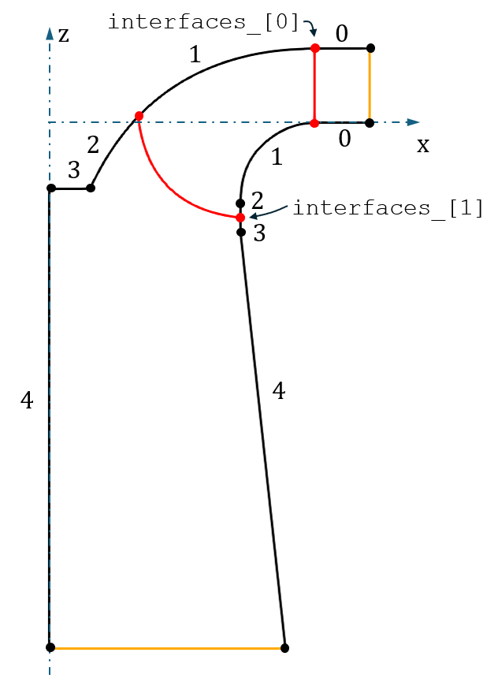
Fig. 39 Meridional channel with interface (red) and inlet and outlet curves (orange). Numbering of the hub and shroud curves (black) corresponds to the indices in the
hubCurves_andshroudCurves_lists.Curve-to-Interface Lists
The
ctilists (curve-to-interface) track which hub and shroud curves are upstream of which interface. The lists contain one entry per hub or shroud curve. If a curve endpoint lies on an interface curve, the corresponding entry stores the interface ID; otherwise the entry isNone.For the example shown in Fig. 39, the resulting
ctilists are:hub_cti = [0, 1, None, None, None]shroud_cti = [0, None, 1, None, None]
The
ctilists are passed to the methodpropagate_interface_ids_next(), where the entries are matched to the regular channels to which the curves belong. The returned values overwrite the originalctilists.The resulting
shroud_ctilist is:shroud_cti = [0, 1, 1, None, None]
Inlet and Outlet Curves of the Meridional Contour
In
inOutCurves_, the inlet and outlet curves of the meridional contour are stored. The inlet curve is created as a straight line between the start points of the first curves in the hub and shroud curve lists. The outlet curve is created in the same way, using the end points of the last hub and shroud curves.Regular Channels
The number of regular channels corresponds to the number of defined interfaces. The first regular channel is created between the inlet curve and the first interface. Subsequent regular channels are created between adjacent interfaces in flow direction.
The regular channel surfaces are created by iterating over the number of interfaces.
For each regular channel, the hub and shroud curves belonging to that channel are determined using the method
findChannelCurves(). This method is called once for the hub curves and once for the shroud curves. The inputs are the instantiated curve listshubCurves_orshroudCurves_, thectilistshub_ctiorshroud_cti, and the ID of the regular channel, as well as a label. The curves belonging to a channel are identified by matching the channel ID against thectilist entries and are combined into a single curve.The upstream interface, or in the case of the first regular channel the inlet of the meridional channel, forms the inlet boundary of each regular channel. The downstream interface forms the outlet boundary.
The surfaces are constructed using a
bSplineSurface_bSplineCurveFillConstructOCCobject from the inlet, outlet, and the combined hub and shroud curves of the regular channel.To ensure consistent orientation of the resulting surfaces and volumes, the curves are passed to the construct object in the following order:
combined hub curve
inlet of the regular channel
combined shroud curve
outlet of the regular channel
This results in a regular channel volume whose uvw-directions after rotation are:
u : circumferential direction
v : meridional direction
w : hub-to-shroud direction
The regular channel surfaces are stored in the list
regChannels_. The following figure shows the surfaces of the regular channels.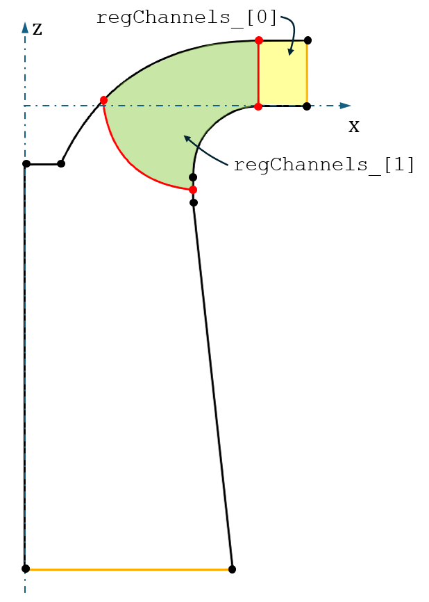
Fig. 40 Regular channels (yellow, green) between the interfaces. Special hub and shroud curves are not part of the regular channels.
Layer Region Curves
The curves downstream of the last interface are not part of the regular channels. Their value in the propagated
ctilist isNone. By iterating over thectilist and checking forNonevalues, the special hub and shroud curves are identified and stored in the listsspeHub_andspeShroud_. These special curves are used for the layered flow channel.The inlet of the layered flow channel is formed by the last interface curve, and the outlet is formed by the outlet of the meridional channel. These curves are stored in the list
inOutLayerReg_.The following figure shows the special curves and the inlet and outlet of the layered flow channel contour.
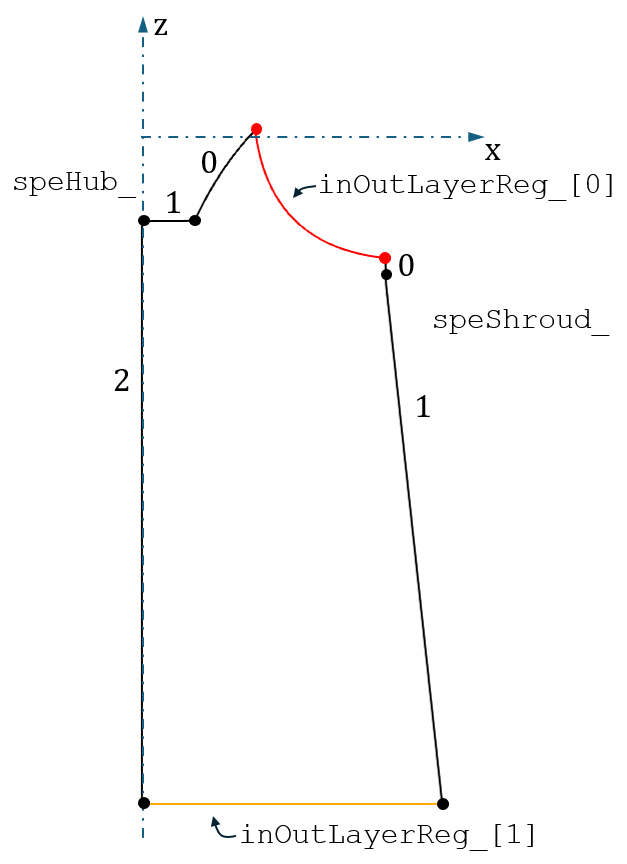
Fig. 41 Special hub and shroud curves with numbering according to their positions in the
speHub_andspeShroud_lists. The inlet and outlet curves of the layered flow channel are stored ininOutLayerReg_.
- createInterface(hubCurves, shroudCurves, interface_hub, interface_shroud, curve, normalAxis)[source]
Create interface curve between hub and shroud.
This method:
Creates a linear mean line between the hub and shroud point of the interface.
Creates the interface curve based on the mean line.
Checks if the interface curve intersects with any hub or shroud curves.
- Parameters:
hubCurves (List[analyticGeometry]) – List of hub curves.
shroudCurves (List[analyticGeometry]) – List of shroud curves.
interface_hub (List[Tuple[int, float]]) –
Positions of the interfaces on the hub curves. Each entry represents:
interface_hub[i]: Interface number.interface_hub[i][0]: Curve number where the interface is located.interface_hub[i][1]: Percentage along the curve (0 to 1).
interface_shroud (List[Tuple[int, float]]) –
Positions of the interfaces on the shroud curves. Each entry represents:
interface_shroud[i]: Interface number.interface_shroud[i][0]: Curve number where the interface is located.interface_shroud[i][1]: Percentage along the curve (0 to 1).
curve (List[Tuple[float, float, int]]) –
Curvature of the interface curve from hub to shroud. Each entry represents:
curve[i]: Interface number.curve[i][0]: Curvature offset point [%] from hub to shroud.curve[i][1]: Curvature as a percentage of the connection line length.curve[i][2]: Curvature direction.
normalAxis (dtVector3) – Normal axis
- Returns:
interfaces – List of interface curves.
- Return type:
List[analyticGeometry]
The interfaces are created between points on the hub and shroud curves (
pointHubandpointShroud), which are specified using the input listsinterface_hubandinterface_shroud.The lists are unpacked as follows:
interface_hub[i]: Start point of the i-th interface curve on the hub.interface_shroud[i]: End point of the i-th interface curve on the shroud.
The lower-level list entries define the hub and shroud curves and the procentual positions along those curves at which the interface start and end points are located:
interface_hub[i][0]: Index of the hub curve on which the start point lies.interface_hub[i][1]: Percentage along the hub curve where the start point is located.
By iterating over the interface lists, the interface curves are constructed.
Between the hub and shroud points, a straight line
MP_linearis created, spanning from the hub point to the shroud point. Based on this line and the input listcurve, the curvature of the interface is defined.The list
curveis structured as follows. The highest level corresponds to the interface index:curve[i]: Parameters of the i-th interface.
The lower level defines the curvature properties of the interface:
curve[i][0]: Control point offset as a percentage of the length ofMP_linear.curve[i][1]: Control point base position as a percentage alongMP_linear.curve[i][2]: Direction of the control point offset.
The following figure illustrates the creation of the interface curves, with emphasis on the curvature definition of the second interface curve.
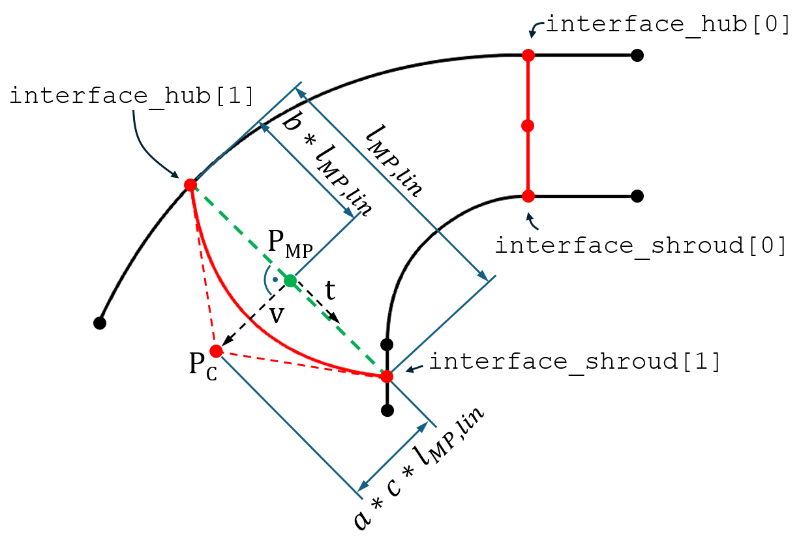
Fig. 42 Creation of the interface curves (red) between the hub and shroud curves (black), using the linear mean-plane curve
MP_linear(green).Table 4 gives the mapping between the mathematical symbols in Fig. 42 and the naming of the variables in this method.
Table 4 Mapping between mathematical symbols and variable names. Symbol
Label
\(a\)
curve[i][0]\(b\)
curve[i][1]\(c\)
curve[i][2]\(MP,lin\)
MP_linearThe curvature is defined using a single control point
pointCurve(\(\mathbf{P_{C}}\)). This control point is computed by applying an offset from a point (\(\mathbf{P_{MP}}\)) located along the span ofMP_linear. The position along the span is given as a percentage incurve[i][1](\(b\)).The offset is applied in the normal direction of
MP_linear(\(\mathbf{v}\)) within the two-dimensional plane of the meridional contour. This direction is computed as the normalized cross product of the tangential direction ofMP_linear(\(\mathbf{t}\)) and the normal axis of the meridional contournormalAxis(\(\mathbf{n_{global}}\)):\[\mathbf{v} = \frac{\mathbf{t} \times \mathbf{n_{global}}}{\|\mathbf{t} \times \mathbf{n_{global}}\|}\]The offset magnitude is defined as a percentage of the length of
MP_linear(\(l_{MP,lin}\)), specified bycurve[i][0](\(a\)). The direction of curvature is controlled bycurve[i][2](\(c\)), which takes the values1or-1.The control point
pointCurveis then defined as:\[\mathbf{P_{C}} = \mathbf{P_{MP}} + \mathbf{v} \cdot l_{MP,lin} \cdot a \cdot c\]The interface curve is created from the start and end points on the hub and shroud (
pointHubandpointShroud) together with the control pointpointCurve. It is stored in the listinterfaces, along with the other interface curves created within this loop.The method
detectIntersect()is used to detect possible intersections between the interface curves and the hub and shroud curves. The inputs to this method are the list of interface curves and a list of curves against which intersections are checked.The returned lists
intersects_hubandintersects_shroudcontain information about which interface curves intersect which hub or shroud curves. If no intersections are detected, the lists are empty.If intersections are detected, the corresponding intersecting curves are reported via logging statements.
The list of interface curves is returned by the method.
- detectIntersect(interfaces, curves)[source]
Detect intersections between curves from two lists.
This method:
Iterates over the interface list.
Cuts each interface curve at 5% and 95% of its span.
Iterates over the second curve list.
Checks for intersections between the cut interface and each curve.
Creates and returns a list managing intersecting curve pairs.
- Parameters:
interfaces (List[analyticGeometry]) – List of interface curves.
curves (List[analyticGeometry]) – List of curves to be checked for intersections.
- Returns:
intersectList –
List of detected intersections. Each entry represents:
intersectList[i]: curve pair entryintersectList[i][0]: ID of interface curveintersectList[i][1]: ID of curve from second listintersectList[i][2]: True if intersection occurs
- Return type:
List[Tuple[int, int, bool]]
By comparing curves in the two input lists, possible intersections are detected and stored in
intersectList.The method iterates over all interface curves in
interfaces. Each interface is trimmed at 5% and 95% of its parameter range to avoid detecting the intersections at the interface endpoints where they connect to the hub or shroud curves. The resulting trimmed curve is stored ascut_interface.For each
cut_interface, all curves in the input listcurvesare checked for intersections. This is performed using the objectgmfof typedtOO.gslMinFloatAttr. The callgmf.perform()returnsTrueif an intersection is detected, which is stored in the variableinterbool.If
interboolisTrue, the IDs of the interface and curve, together with the boolean flag, are appended to the intersection list.The resulting
intersectListis unpacked as follows:intersectList[i]: detected intersection between two curvesintersectList[i][0]: ID of interface curveintersectList[i][1]: ID of curve in second listintersectList[i][2]:Trueif intersection is detected
The intersection list is returned by the method.
- propagate_interface_ids_next(curve_to_interface, lab)[source]
Map curves to IDs of regular channels.
This method:
Takes the
cti(curve-to-interface) lists created increateSplits()Propagates interface IDs to upstream curve segments
Returns the propagated lists
- Parameters:
curve_to_interface (List) – Curve-to-interface list containing interface IDs or
None.lab (str) – Label.
- Returns:
result – Propagated curve-to-regular-channel list.
- Return type:
List
This method modifies the
cti(curve_to_interface) list. The list is initially returned bycreateSplits(). In its original form, it only marks curves that are directly upstream of an interface.In this method, the interface IDs are propagated upstream so that all curve segments belonging to the same regular channel carry the same interface ID. This allows the curves to be directly associated with their corresponding regular channels.
As an example,
createSplits()may return actilist such as:shroud_cti = [0, None, 1, None, None, None, None]
After propagation, this method modifies it to:
shroud_cti = [0, 1, 1, None, None, None, None]
In this case, entries 1 and 2 can now be identified as belonging to regular channel 1.
The method takes the
curve_to_interfacelist and propagates the integer interface IDs to all upstream curves that currently containNonevalues.All interface IDs present in
curve_to_interfaceare first collected in the listiface_indices. If no interface IDs are found, an emptyresultlist is returned.The index of the first interface is stored in
first_idx. Subsequent interface IDs are propagated forward to all curve entries between consecutive interface indices. This process is controlled using the variablesstartandendwithin a loop.The resulting list contains, for each curve, either the corresponding regular channel ID or
None. The updated list is returned at the end of the method.
- findChannelCurves(curves, cti, ii, lab)[source]
Find and combine curves belonging to a regular channel.
This method:
Iterates over a list of curves.
Identifies curves that belong to the regular channel.
Combines the curves.
Returns the combined curve in a list.
- Parameters:
curves (List[analyticGeometry]) – List of curves.
cti (List) –
Curve-to-interface list mapping split curves to regular channels. Entries can be:
int: ID of the regular channel the curve belongs to
None: curve belongs to a layered region
ii (int) – ID of the regular channel.
lab (str) – Label.
- Returns:
curve_list – List containing the combined curve.
- Return type:
List[analyticGeometry]
The ID of the regular channel is passed to the method via the input
ii. The listcurvescontains the curves that form either the hub or the shroud of the channel surface.The list
cticontains one entry for each curve incurves. The entries are the IDs of the regular channels the corresponding curves belong to (orNoneif the curve is not part of a regular channel).By iterating over
curvesand checking whether the corresponding entry inctimatchesii, the relevant curves are identified.The first curve belonging to the regular channel is assigned to
regCurve. In subsequent iterations, all additional matching curves are merged intoregCurveusing the dtOO class bSplineCurve_curveConnectConstructOCC.The combined curve of the regular channel is returned in
curve_list.
- static createSplits(splits, inCurves, lab)[source]
Split the curves at the defined positions.
This method:
Iterates over split definitions.
Performs splits on the specified curves at given positions.
Creates a curve-to-interface list.
- Parameters:
splits (List[List[Tuple[float, int]]]) –
List defining splits for each curve. Each entry represents:
splits[i][n]: n-th split on the i-th curvesplits[i][n][0]: parameter (percentage) where the split is appliedsplits[i][n][1]: ID of the interface that defines the split
inCurves (List[analyticGeometry]) – Input curves to be split.
lab (str) – Label.
- Returns:
outCurves (List[analyticGeometry]) – List of split curves.
curve_to_interface (List) – List containing the interface ID for each curve endpoint. Entries can be:
int: ID of the interface located at the curve endpoint
None: no interface is located at the curve endpoint
The curves that are split by this method are provided in the input list
inCurves. The nested listsplitsdefines the split positions on these curves.The first-level index
splits[i]corresponds to the i-th curve ininCurves. The second-level indexsplits[i][n]corresponds to the n-th split applied to that curve.Each split is defined by a tuple containing:
the position along the curve (as a percentage of its parameter range),
the ID of the interface that defines the split.
The full structure of
splitsis thereforeList[List[Tuple[float, int]]], wheresplits[i][n][0]defines the split position andsplits[i][n][1]defines the corresponding interface ID.The following figure shows the activity diagram of this method.
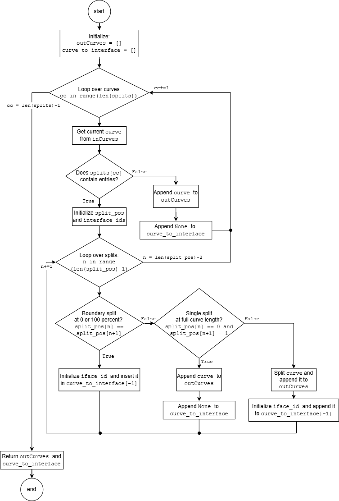
Fig. 43 Activity diagram of the
createSplitsmethod.At the start of the method, empty lists are created for the split curves
outCurvesand the curve-to-interface listcurve_to_interface. The latter is used to track which interface each curve inoutCurvesbelongs to.The method generates the split curves by iterating over the first level of the list
splits. The curve processed in each iteration is referred to ascurve.If splits occur on this curve, the lists
split_posandinterface_idsare created. These lists aggregate the values from the second level ofsplitsin order to support multiple splits per curve.split_poscontains the percentual split positions along the curve span. The values0.0and1.0are prepended or appended respectively to ensure the full curve range is covered.interface_idsstores the IDs of the interfaces associated with each split.The curve splitting is performed by iterating over
split_pos. During this loop, three cases can occur:Boundary split at 0 or 100 percent
This case applies when a split position is exactly
0.0or1.0. In this situation,split_poscontains two adjacent identical values (i.e.split_pos[n] == split_pos[n+1]).The corresponding interface ID is appended to
curve_to_interface, but no geometric split is performed.Single split at full curve length
This case occurs when the only effective split is at
1.0, resulting in neighbouring entries0.0and1.0insplit_pos.The full curve is appended to
outCurveswithout modification. The corresponding entry incurve_to_interfaceis handled in the subsequent iteration, where case 1 applies.Regular split case
If neither Case 1 nor Case 2 applies, a standard split is performed.
The curve is split using the dtOO class trimmedCurve_uBounds, creating a new curve segment between two neighbouring values in
split_pos.The interface ID is appended to
curve_to_interfaceif the resulting segment lies upstream of the interface; otherwise,Noneis appended for downstream segments.
If no split is defined for a curve, it is appended unchanged to
outCurves, andNoneis appended tocurve_to_interface.Finally, the lists
outCurvesandcurve_to_interfaceare returned.
- static calculateNormalAxis(curves)[source]
Calculate the bounding box and normal axis of curves in one plane.
This method:
Creates a bounding box around the curves.
Calculates the normal axis on the bounding box.
Calculates the center of the bounding box.
Returns normal axis, center and bounding box.
- Parameters:
curves (List[analyticGeometry]) – List of curves.
- Returns:
normalAxis (dtVector3) – Normal axis of the bounding box.
bbCenter (dtPoint3) – Center point of the bounding box.
bb (pairDtPoint3) – Bounding box points.
- build() None[source]
Plot the instantiated geometries in paraview if debug is enabeled.
- Parameters:
None
- Return type:
None
This method allows the instantiated geometries to be plotted in ParaView, by adding them to the analytic geometry container. If the code is run in paraview, the geometries can be found with the FindAndShow method.
- getRegChannel(pos: int, nSlices: int) dtOOPythonSWIG.analyticGeometry[source]
Return a regular channel.
This method:
Returns a rotated segment of a regular channel surface.
- Parameters:
pos (int) – Channel Id.
nSlices (int) – Number of periodic slices.
- Returns:
Regular channel volume.
- Return type:
analyticGeometry
This getter method is used to return a regular channel specified by the channel ID with
pos. The rotation angle can be set withnSliceswhich determines how many partitions the flow domain will have.If the number of slices is set to one, a whole 360 degree volume of the flow channel is returned. It is created with the dtOO class rotatingMap2dT03d.
If a number greater than one is handed to the method, the class partRotatingMap2dTo3d is used, where the angle is calculated as \(360°/n_{Slices}\).
The following figure shows the regular channel volumes resulting from the rotation of the regular channel faces.
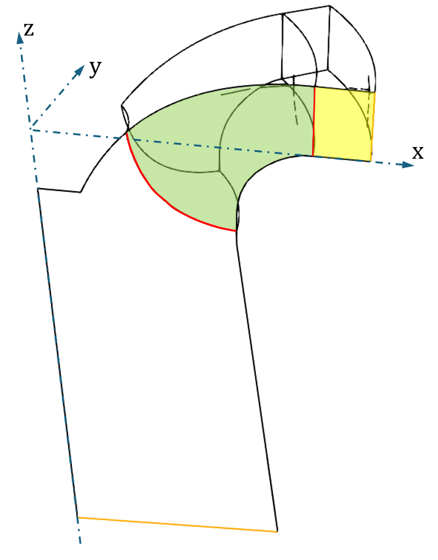
Fig. 44 Regular channel volumes created by rotating the first (yellow) and second (green) regular channel faces.
- getLayerRegionCurves() Tuple[List[dtOOPythonSWIG.analyticGeometry]][source]
Returns the bounding curves for the layered region.
- Parameters:
None
- Returns:
speHub_ (List[analyticGeometry]) – Hub curves of the layered region
speShroud_ (List[analyticGeometry]) – Shroud curves of the layered region
inOutLayerReg_ (List[analyticGeometry]) – inlet and outlet curves of the layered region
Returns the bounding curves of the layered region shown in Fig. 41.
{kind=link}
{kind=link}
{kind=link}
{kind=link}
{kind=link}
{kind=link}
- class dtOOPythonApp.builder.vec3dThreeD_skinAndSplit.vec3dThreeD_skinAndSplit(label: str, aFOne: dtOOPythonSWIG.analyticFunction, aFTwo: dtOOPythonSWIG.analyticFunction, splitDim: int = 0, splits: List[List[float]] = [[]], tEMeshBlockThickness: float | None = None, meanplaneFromBlocks: bool = False, meanplaneExtOut: float | None = 0.01, meanplaneExtIn: float | None = 0.01, nMeanplaneBlocks: int | None = 3)[source]
Create mesh blocks and meanplane curves from blade and surrounding surface.
This class:
Splits blade and the mesh block surfaces at defined positions.
Skins mesh block volumes of the corresponding surfaces.
Creates a meanplane curves at the inlet and outlet.
Creates trailing edge mesh blocks.
- label_
Label.
- Type:
str
- aFOne_
First BSpline surface.
- Type:
vec3dSurfaceTwoD
- aFTwo_
Second BSpline surface.
- Type:
vec3dSurfaceTwoD
- splitDim_
Dimension where surface is splitted before skinned.
- Type:
int
- splits_
Positions for splitting.
- Type:
List[Tuple[float]]
- thickness_
Thickness of the trailing edge mesh blocks.
- Type:
float
- meanplaneFromBlocks_
Activates creation of meanplane curve.
- Type:
bool
- meanplaneExtOut_
Extention of meanplane curve towards outlet.
- Type:
float
- meanplaneExtIn_
Extention of meanplane curve towards inlet.
- Type:
float
- nMeanplaneBlocks_
Number of block faces used for the meanplane.
- Type:
int
Examples
>>> from dtOOPythonSWIG import dtPoint3 >>> from dtOOPythonSWIG import bSplineCurve_pointConstructOCC >>> from dtOOPythonSWIG import bSplineSurface_skinConstructOCC >>> from dtOOPythonSWIG import vec3dSurfaceTwoD
Create first analyticFunction:
>>> aFOne = vec3dSurfaceTwoD( ... bSplineSurface_skinConstructOCC( ... bSplineCurve_pointConstructOCC( ... dtPoint3(0,0,0), dtPoint3(1,0,0) ... ).result(), ... bSplineCurve_pointConstructOCC( ... dtPoint3(0,1,0), dtPoint3(1,1,0) ... ).result() ... ).result() ... )
Create second analyticFunction:
>>> aFTwo = vec3dSurfaceTwoD( ... bSplineSurface_skinConstructOCC( ... bSplineCurve_pointConstructOCC( ... dtPoint3(0,0,1), dtPoint3(1,0,1) ... ).result(), ... bSplineCurve_pointConstructOCC( ... dtPoint3(0,1,1), dtPoint3(1,1,1) ... ).result() ... ).result() ... )
Initialize builder:
>>> builder = vec3dThreeD_skinAndSplit("unitCube", aFOne, aFTwo)
Build volume:
>>> builder.build()
Check label of first analyticFunction:
>>> builder.lVH_aF().labels()[0] 'unitCube'
The main method of this class is
build().The analytic functions of the blade surface
aFOne_and the surrounding surfaceaFTwo_are split at the positions specified insplits_. The input parametersplitDim_specifies the parameter direction in which the surfaces are split. A value of0corresponds to splitting along the u-parameter direction.The format of
splits_isList[Tuple[float, float]]. Each entrysplits_[i]corresponds to one resulting mesh block. A mesh block is created by splitting the surfacesaFOne_andaFTwo_between the normalized minimum and maximum parameter values specified bysplits_[i][0]andsplits_[i][1].Depending on whether
splitDim_specifies the u- or v-direction, the values insplits_are converted into the corresponding surface parameter values.The mesh block volumes are created by skinning the resulting surfaces.
Two trailing-edge mesh blocks can additionally be created with a thickness specified by
teMeshBlockThickness_. If this value is set toNone, no trailing-edge mesh blocks are generated.Otherwise, the trailing-edge mesh blocks are created by computing a tangential offset of the edges of the first and last mesh blocks surrounding the blade. The offset edges are computed using the method
teOffsetCurves_vec3dSurfaceTwoD(). This method returns the base curve and a list of points, derived from the base curve, from which the offset curve can be constructed.By skinning the base and offset curves, faces extending from the first and last trailing edge mesh blocks are generated. A second skinning operation is then used to create the trailing-edge mesh block volumes. To maintain consistent parameter orientations between the trailing-edge mesh blocks and the other mesh blocks, the skinning operation is performed in
createBlockFaces().Meanplane curves are generated if the Boolean parameter
meanplaneFromBlocksis set toTrue. Similar to the trailing-edge mesh block edges, the meanplane curves are computed as tangential offsets of the blade mesh blocks usingteOffsetCurves_vec3dSurfaceTwoD().The first meanplane curve is offset from the first blade mesh block towards the outlet of the regular channel.
The second meanplane curve is offset from the
n-th blade mesh block, specified bynMeanplaneBlocks_, towards the inlet.nMeanplaneBlocks_defines the index of the mesh block from which the meanplane curve is generated, starting at zero.The extension lengths of the offsets for the two meanplane curves are specified by
meanplaneExtOut_andmeanplaneExtIn_.The string value stored in
label_is used to label the generated analytic functions.The analytic function objects of the blade mesh blocks, trailing-edge mesh blocks, and meanplane curves are added to the container object of the main class using
appendAnalyticFunction().- build() None[source]
Build part.
This method:
Splits the blade and surrounding mesh block surfaces at predefined positions.
Creates mesh block volumes by skinning the corresponding surfaces.
Generates meanplane curves at the inlet and outlet.
Creates trailing-edge mesh blocks.
- Parameters:
None
- Return type:
None
If no split positions are defined (
splits_ == [[]]), the two surfaces are skinned directly, resulting in a single continuous mesh block.If split positions are defined, the mesh blocks are created by iterating over the entries in
splits_. Within this loop, the following entities are generated:Mesh block volumes around the blade.
Edge curves for the trailing-edge mesh blocks.
Meanplane curves extending towards the inlet and outlet.
All geometries are constructed as analytic functions. The loop iteration is tracked using the counter
cc.The following figure illustrates the workflow of the operations performed within this loop.
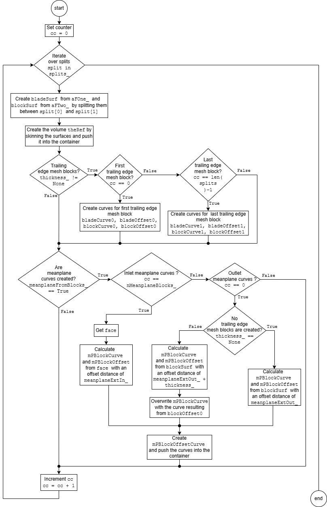
Fig. 45 Workflow of the main loop in
vec3dThreeD_skinAndSplit().Iterate over Splits
for split in splits_
All the following operations are performed in the main loop.
Split the Surfaces and Skin the Volumes
For each entry in
splits_, the surface functionsaFOne_andaFTwo_are split within the parameter range defined bysplit[0]andsplit[1]. This operation is performed using the dtOO class bSplineSurface_bSplineSurfaceSplitConstructOCC.The resulting surfaces are stored in the variables
bladeSurfandblockSurfasvec3dSurfaceTwoDobjects. These surfaces are then skinned into a volume using the dtOO class vec3dTransVolThreeD_skinBSplineSurfaces and appended to the container.The following figure illustrates the blade and the surrounding blade mesh blocks. In the following documentation, the direction specified by
splitDim_corresponds to the u-direction of the blade surface.
Fig. 46 Blade surface (grey) surrounded by mesh blocks.
By skinning the blade surfaces with the surrounding surfaces, the resulting volume parameter directions are defined as follows:
u: direction along the blade surface
v: direction from hub to shroud
w: direction from the blade surface towards the surrounding surface
The volumes surrounding the blade are labeled according to the following convention:
label_ + "_" + str(cc + 1)
With this convention, the first blade mesh block in the direction of
splitDim_is assigned the suffix_1.Creation of Offset Curves
The generation of the trailing-edge mesh block curves, as well as the creation of the meanplane curves, is performed using the method
teOffsetCurves_vec3dSurfaceTwoD().The method takes a mesh block surface as input. The first input argument defines the normalized parametric position of the base curve on the surface. An integer argument specifies the parameter direction in which the base curve is extracted and offset. By providing a thickness value, the offset distance is defined.
The method returns the base curve together with a
vectorDtPoint3object containing the points of the offset curve.Several conditional checks are performed within the loop to ensure that the correct curves are generated.
Trailing-edge mesh block curves
The following condition applies:
thickness_ != None
Trailing-edge mesh blocks are generated only if
thickness_ != None. In this case, offset curves are computed for the surfacesbladeSurfandblockSurfof the first mesh block (cc == 0) and the last mesh block (cc == len(splits_) - 1).The following variable names are assigned to the geometry objects returned by
teOffsetCurves_vec3dSurfaceTwoD():bladeCurve0: Base curve on the blade surface of the first blade mesh block.bladeOffset0:vectorDtPoint3object containing the offset points ofbladeCurve0.blockCurve0: Base curve on the block surface of the first blade mesh block.blockOffset0:vectorDtPoint3object containing the offset points ofblockCurve0.bladeCurve1: Base curve on the blade surface of the last blade mesh block.bladeOffset1:vectorDtPoint3object containing the offset points ofbladeCurve1.blockCurve1: Base curve on the block surface of the last blade mesh block.blockOffset1:vectorDtPoint3object containing the offset points ofblockCurve1.
The following figure illustrates the resulting curves for the first mesh block surrounding the blade. The variable \(t_{TE}\) corresponds to the parameter
thickness_.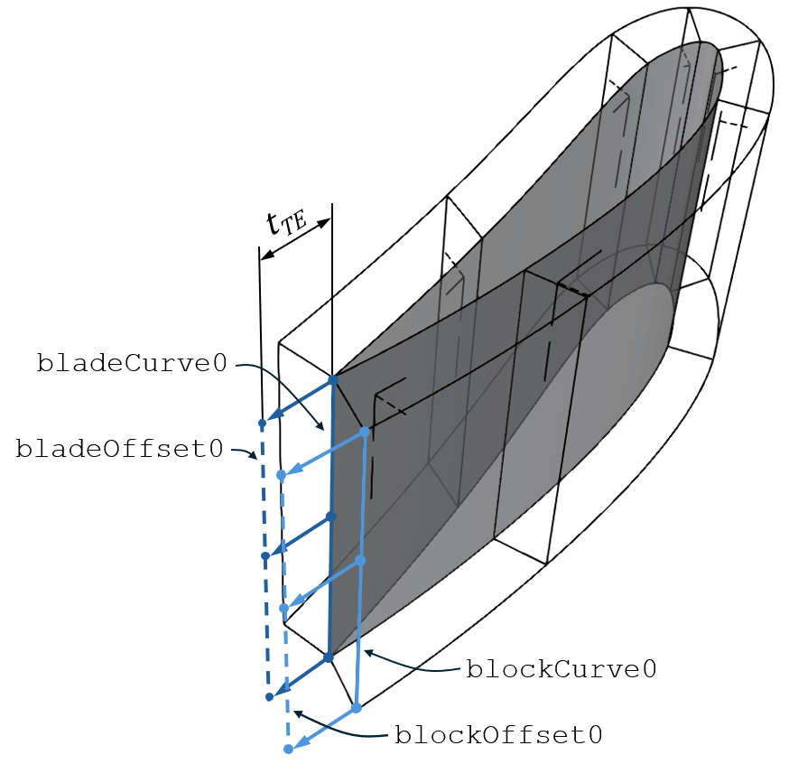
Fig. 47 Trailing-edge mesh block curves of the first mesh block (
cc == 0).Meanplane curves
The following condition applies:
meanplaneFromBlocks_ == True
The creation of the meanplane curves differs between two main cases.
Meanplane extending towards the inlet
In the first case, the meanplane curves extending towards the inlet are generated. These curves are created during the iteration for which
cc == nMeanplaneBlocks_applies.The curves are based on the third face (
face) of the mesh block. The offset curve is constructed from the base curve located at 100 percent of the v-direction of this face.The offset length of the curve is specified by
meanplaneExtIn_, corresponding to \(E_{MP,in}\) in Fig. 48.The returned geometry objects are assigned to the variables
mPBlockCurveandmPBlockOffset. ThevectorDtPoint3objectmPBlockOffsetis converted into a curve and stored inmPBlockOffsetCurve.The curves are labeled and appended to the container using the following naming convention:
mPBlockCurve:label_ + "Curve_in0"mPBlockOffsetCurve:label_ + "Curve_in1"
The following figure illustrates the creation of the meanplane curve geometries for the meanplanes extending towards the inlet and the outlet. In this example, the inlet meanplane is located at
nMeanplaneBlocks_ = 3. Trailing-edge mesh blocks are enabled.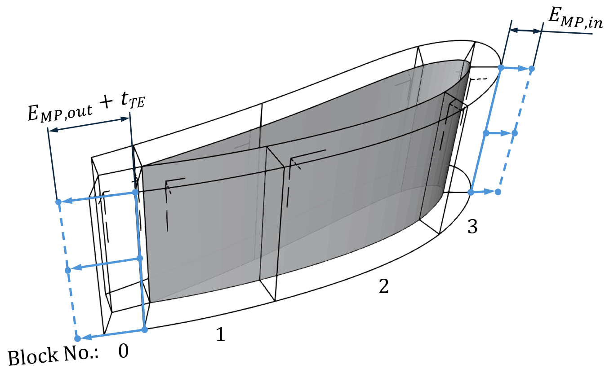
Fig. 48 Creation of the meanplane curves extending towards the inlet and the outlet. The block numbers correspond to the mesh block indices and the value of
cc + 1within the loop.Meanplane extending towards the outlet
The curves for the meanplane extending towards the outlet are created on the first blade mesh block, for which
cc == 0applies.The creation procedure differs depending on whether trailing-edge mesh blocks are generated.
If no trailing-edge mesh blocks are created (
thickness_ == None), the curves are generated from the curve at 0 percent of the u-direction ofblockSurf. The offset length is specified bymeanplaneExtOut_, corresponding to \(E_{MP,out}\) in Fig. 48.The generated curve objects are assigned to the variables
mPBlockCurveandmPBlockOffset.If trailing-edge mesh blocks are generated, the offset length of the meanplane curve created from the first blade mesh block is
meanplaneExtOut_ + thickness_In this case, the base curve returned by
teOffsetCurves_vec3dSurfaceTwoD()is not used directly as the meanplane curve. Instead, the base curve is reconstructed from the offset points of the first trailing-edge mesh block,blockOffset0. The resulting curve overwritesmPBlockCurve.In both cases, the curve
mPBlockOffsetCurveis generated from thevectorDtPoint3objectmPBlockOffset.The curves are appended to the container as
vec3dCurveOneDobjects using the following naming convention:mPBlockCurve:label_ + "Curve_out0"mPBlockOffsetCurve:label_ + "Curve_out1"
The meanplane curves appended to the container in the selected example are shown in the following figure.

Fig. 49 Final meanplane curves generated in this method. The labels
in0,in1,out0, andout1correspond to the naming convention used for the curves in the implementation.After each iteration of the loop, the iterator is incremented (
cc = cc + 1)Trailing Edge Mesh Blocks
The trailing-edge volumes are generated from the trailing-edge curves. The following operations are performed only if
thickness_ != Noneapplies.Offset Curves at Trailing Edge
From the
vectorDtPoint3objects of the two trailing-edge mesh blocks on the blade side,bladeOffset0andbladeOffset1, the mean pointsmeanPointsare computed. Using these points, a mean offset curvemeanBladeOffsetCurveis generated, which defines the offset surface of the trailing edge.The
vectorDtPoint3objects of the block offset curves are converted into the curvesblockOffsetCurve_0andblockOffsetCurve_1.Trailing Edge Mesh Block Surfaces
The trailing-edge mesh block surfaces extending from the blade and from the mesh block surfaces are generated using the method
createBlockFaces(). The method expects an input list with the following structure:blockEdges = Tuple[ Tuple[ analyticGeometry, analyticGeometry ], Tuple[ analyticGeometry, analyticGeometry ] ]
The method returns a
vectorHandlingConstAnalyticFunctionobjectvh_aFcontaining analytic surface functions generated by skinning the curves within each second-levelTupleentry.The skinning directions are defined as follows:
vh_aF[0]: fromblockEdges[0][0]toblockEdges[0][1]vh_aF[1]: fromblockEdges[1][0]toblockEdges[1][1]
By applying the dtOO class bSplineSurface_exchangeSurfaceConstructOCC on the skinned surface in the method, the parameter directions of the surfaces are kept consistent with the blade and mesh block surfaces.
Trailing Edge Mesh Block Volumes
The returned vector handler is passed to the
dtOOclassvec3dTransVolThreeD_skinBSplineSurfacesto create the trailing-edge mesh block volumestheRef.The volume skinning direction is defined as follows:
theRef: fromvh_aF[0]tovh_aF[1]
The following figure illustrates the skinning of the curves and surfaces.
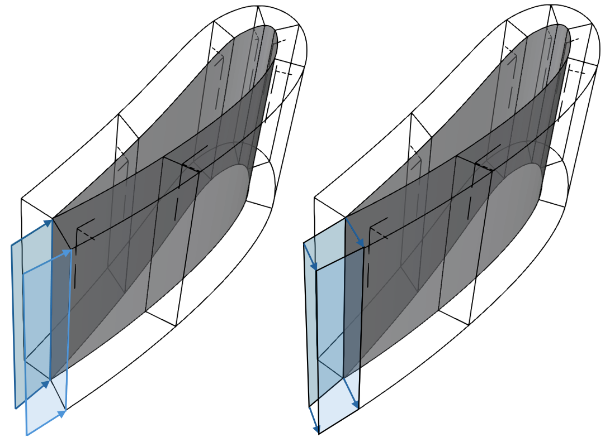
Fig. 50 Skinning of the first trailing-edge mesh block. Surface skinning is shown on the left, and volume skinning on the right. The arrows indicate the skinning directions.
By arranging the order of the curves in the input list passed to
createBlockFaces(), the parameter directions of the trailing-edge mesh block volumes remain consistent with those of the blade mesh blocks.The generated volumes are appended to the analytic function container using the same naming convention as the blade mesh blocks.
The first trailing-edge mesh block is labeled with the index zero:
label_ + "_0"The last trailing-edge mesh block receives the label:
label_ + "_" + str(len(splits_) + 1)The following figure shows the resulting mesh block volumes.
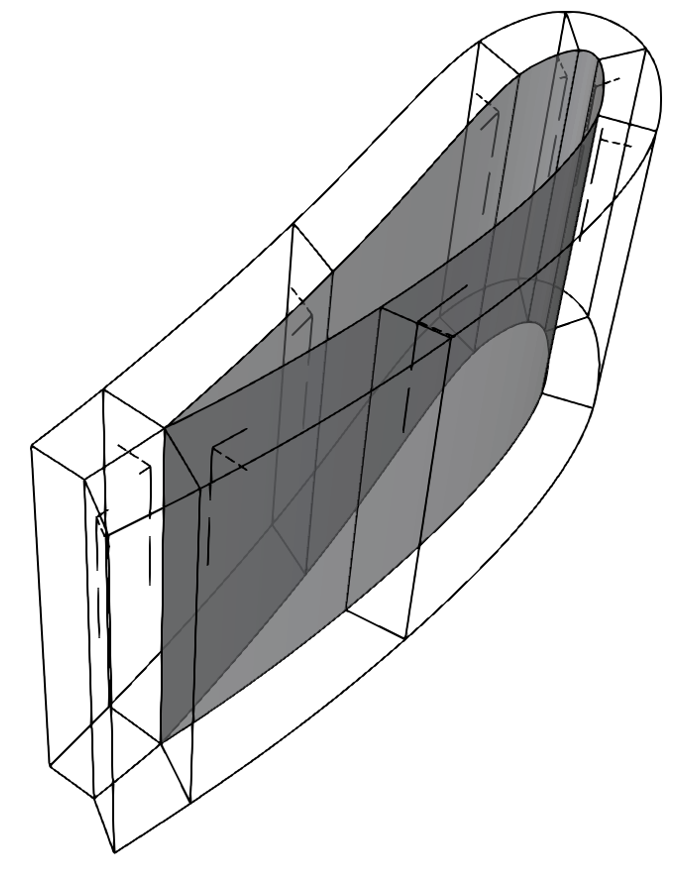
Fig. 51 Blade surface (grey) with blade mesh blocks and trailing-edge mesh blocks.
- teOffsetCurves_vec3dSurfaceTwoD(surf, segPercent, blockThickness, splitDim)[source]
Extract a curve on a face and calculate points, which are tangentially offset to the face.
This method:
Extracts a curve from a surface at a constant parameter value.
Computes tangential offset points along the curve span.
Returns the extracted curve together with the offset points.
- Parameters:
surf (vec3dSurfaceTwoD) – Input surface.
segPercent (float) – Normalized parameter position at which the curve is extracted from the surface.
blockThickness (float) – Offset distance used for the tangential offset curve.
splitDim (int) – Parameter direction in which the curve is extracted (u- or v-direction).
- Returns:
curve (analyticGeometry) – Curve extracted from the surface at
segPercentin the direction specified bysplitDim.offsetPoints (vectorDtPoint3) – Container holding the points of the tangentially offset curve.
The surface from which the curve is extracted is provided through the parameter
surf. The normalized parameter positionsegPercentdefines where the curve is extracted. It can be either0or1, corresponding to the minimum or maximum parameter boundary of the surface.The parameter
splitDimspecifies whether the extraction is performed in the u- or v-direction of the surface. The following convention is used:u-direction:
0v-direction:
1
The parameter
blockThicknessdefines the offset distance.The following figure illustrates the workflow of this method.
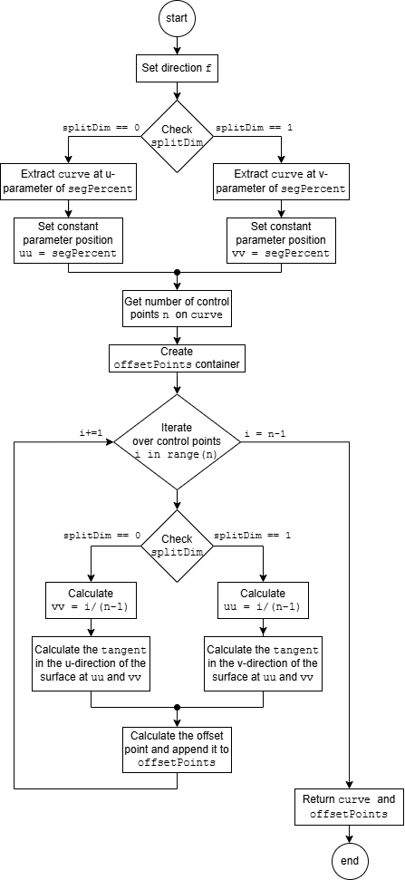
Fig. 52 Workflow of method
teOffsetCurves_vec3dSurfaceTwoD().Set Direction
Depending on the value of
segPercent, the offset direction factorfis assigned either-1or1.Check splitDim
Depending on
splitDim, the base curvecurveis extracted fromsurfat either a constant u-parameter or a constant v-parameter. The normalized positionsegPercentis assigned to eitheruuorvvas the constant parameter value.Get Number of Control Points and Create Container
The extracted
curveis converted into a B-spline curve using thedtOOclassdtOCCBSplineCurve. This allows the control point count of the curve to be queried and stored inn.The output container
offsetPointsof typevectorDtPoint3is then initialized.Iterate over Control Points
The offset points are computed by iterating over the control point indices. Depending on
splitDim, tangent vectors in either the u-direction or the v-direction of the surface are evaluated at the surface coordinates defined byuuandvv.One parameter value remains constant, while the second parameter value is computed from the normalized iterator expression
i / (n - 1).The offset point is computed as the surface point evaluated at
(uu, vv)plus the corresponding tangent vector multiplied byblockThicknessand the direction factorf(see Fig. 47).Each computed point is appended to
offsetPoints.The method returns
curveandoffsetPoints.
- createBlockFaces(curves)[source]
Create trailing edge block faces by skinning edge curves.
This method:
Iterates over the first-level curve list.
Skins the curve pairs defined in the second-level lists.
Returns the generated surfaces in a container.
- Parameters:
curves (Tuple[Tuple[analyticGeometry, analyticGeometry],Tuple[analyticGeometry, analyticGeometry]]) – Collection of curve pairs to be skinned with each other.
- Returns:
vh_aF – Container holding the analytic functions of the generated surfaces.
- Return type:
vectorHandlingConstAnalyticFunction
The curves to be skinned are provided to the method in the following format:
curves = Tuple[ Tuple[ analyticGeometry, analyticGeometry ], Tuple[ analyticGeometry, analyticGeometry ] ]
The method initializes a
vectorHandlingConstAnalyticFunctionobject namedvh_aF.The skinning operation is performed by iterating over the first-level
Tupleusing:for curves0 in curves:
For each entry
curves0, the skinning operation is performed fromcurves0[0]tocurves0[1].After skinning, the
dtOOclassbSplineSurface_exchangeSurfaceConstructOCCis applied in order to exchange the parameter directions of the resulting surface.This produces the following parameter directions on the surface:
u: direction from
curves0[0]tocurves0[1]v: direction from hub to shroud
The resulting surfaces are converted into
vec3dSurfaceTwoDobjects and appended tovh_aF.Finally, the generated surfaces are returned through
vh_aF.
{kind=link}
{kind=link}
{kind=link}
{kind=link}
{kind=link}
{kind=link}
- class dtOOPythonApp.builder.analyticSurface_inOutFeMeanplane.analyticSurface_inOutFeMeanplane(prefix: str, label: str, channel: dtOOPythonSWIG.analyticGeometry, curves: dtOOPythonSWIG.labeledVectorHandlingAnalyticGeometry)[source]
Create the meanplane faces connecting to the interfaces of the regular channel.
This class:
Gets the offset meanplane curves from
aG_.Creates curves on the hub and shroud extending from the offset curves to the respective interfaces along the hub and shroud contours.
Creates curves on the interfaces connecting the hub and shroud curves.
Creates meanplane faces extending to the inlet and outlet from the generated curves.
- prefix_
Prefix of label
- Type:
str
- label_
Label.
- Type:
str
- channel_
Channel.
- Type:
map3dTo3d
- aG_
Mesh block curves.
- Type:
labeledVectorHandlingAnalyticGeometry
- Return type:
None
Examples
>>> import dtOOPythonSWIG as dtOO
Create three dimensional channel domain.
>>> c0 = dtOO.bSplineCurve_pointConstructOCC( ... dtOO.vectorDtPoint3() ... << dtOO.dtPoint3(+1.00, +0.00, 0.50) ... << dtOO.dtPoint3(+0.50, +0.00, 0.50), ... 1 ... ).result() >>> c1 = dtOO.bSplineCurve_pointConstructOCC( ... dtOO.vectorDtPoint3() ... << dtOO.dtPoint3(+0.50, +0.00, 0.50) ... << dtOO.dtPoint3(+0.30, +0.00, 0.25) ... << dtOO.dtPoint3(+0.50, +0.00, 0.00), ... 2 ... ).result() >>> c2 = dtOO.bSplineCurve_pointConstructOCC( ... dtOO.vectorDtPoint3() ... << dtOO.dtPoint3(+0.50, +0.00, 0.00) ... << dtOO.dtPoint3(+1.00, +0.00, 0.00), ... 1 ... ).result() >>> c3 = dtOO.bSplineCurve_pointConstructOCC( ... dtOO.vectorDtPoint3() ... << dtOO.dtPoint3(+1.00, +0.00, 0.00) ... << dtOO.dtPoint3(+1.00, +0.00, 0.50), ... 1 ... ).result() >>> channel2d = dtOO.analyticSurface( ... dtOO.bSplineSurface_bSplineCurveFillConstructOCC( ... c0, c1, c2, c3 ... ).result() ... ) >>> channel = dtOO.rotatingMap2dTo3d( ... dtOO.dtVector3(0,0,1), ... channel2d, ... )
Create the mesh block curves.
>>> c_in1 = dtOO.bSplineCurve_pointConstructOCC( ... dtOO.vectorDtPoint3() ... << dtOO.dtPoint3(+0.90, +0.20, 0.00) ... << dtOO.dtPoint3(+0.90, +0.20, 0.50), ... 1 ... ).result() >>> c_out1 = dtOO.bSplineCurve_pointConstructOCC( ... dtOO.vectorDtPoint3() ... << dtOO.dtPoint3(+0.60, +0.05, 0.00) ... << dtOO.dtPoint3(+0.65, -0.05, 0.50), ... 1 ... ).result()
Push the mesh block curves into a vector handler.
>>> meshBlockCurves = dtOO.labeledVectorHandlingAnalyticGeometry() >>> label = "test" >>> meshBlockCurves.push_back( ... dtOO.analyticCurve( c_in1 ) << "xyz_"+label+"_meshBlockCurve_in1" ... ) >>> meshBlockCurves.push_back( ... dtOO.analyticCurve( c_out1 ) << "xyz_"+label+"_meshBlockCurve_out1" ... )
Create the meanplane faces between the interfaces and the mesh block curves.
>>> from dtOOPythonApp.builder import analyticSurface_inOutFeMeanplane >>> feMeanplane = analyticSurface_inOutFeMeanplane( ... prefix = "xyz", ... label = label, ... channel = channel, ... curves = meshBlockCurves ... ) >>> feMeanplane.build()
Check the label of the last generated geometry.
>>> feMeanplane.lVH_aG().labels()[-1] 'xyz_test_fe_meanplane_out1'
The main method of this class is
build(), where all operations of this class are performed.The meanplane faces are created as objects of the
dtOOclasstrans4SidedFace. They extend between the interfaces and the corresponding offset mesh block curves, which are created in the classvec3dThreeD_skinAndSplit.The channel is converted to the type
map3dTo3dand instantiated aschannel_. It has the following parametric directions:u : circumferential direction
v : meridional direction
w : hub-to-shroud direction
The interfaces represent the inlet and outlet of the channel domain. The inlet is located at 0% and the outlet at 100% of the v-coordinate of the channel. The hub is located at 0% and the shroud at 100% of the w-coordinate.
The string values of
prefix_andlabel_are used to manage the names of the geometry objects in this class.The offset meanplane curves are passed to the class through
curves. This container, of typelabeledVectorHandlingAnalyticGeometry, is instantiated asaG_. The curves extend from the hub to the shroud of the channel and follow the naming convention below:Meanplane curve offset toward the inlet:
prefix_+"_"+label_+"_meshBlockCurve_in1"Meanplane curve offset toward the outlet:
prefix_+"_"+label_+"_meshBlockCurve_out1"
The offset meanplane curves are shown in the following figure.
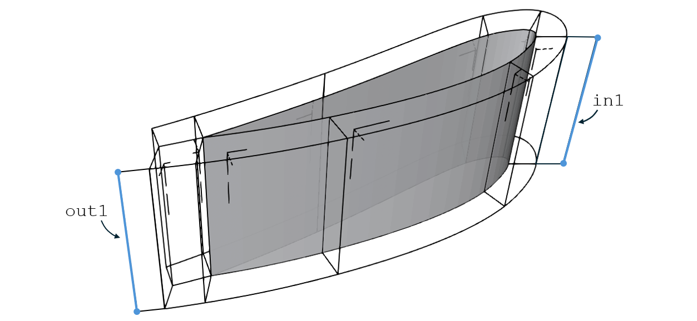
Fig. 53 Offset meanplane curves (blue). Labels correspond to the established naming convention.
The class
trans4SidedFacerequires a closed loop of four bounding curves with consistent directions. The following curves are used for the interfaces:Edge extending between the offset meanplane curve and the interface on the hub
Offset meanplane curve
Edge extending between the meanplane curve and the interface on the shroud
Edge extending between the hub and shroud edges on the interface
The curves have the following locations, directions, and names:
Table 5 Boundary curves of the trans4SidedFaceLocation
From -> To
Name in
build()hub
interface -> meanplane curve
hsCurve_u0_<in/out>meanplane curve
hub -> shroud
see above
shroud
meanplane curve -> interface
hsCurve_u1_<in/out>interface
shroud -> hub
interfCurve_<in/out>By passing the curves to the constructor of
trans4SidedFacein the order established in Table 5, the resulting parameter directions are defined as follows:u : direction of the hub curve
v : direction of the meanplane curve
The following figure shows the
trans4SidedFaceobjects and their bounding curves.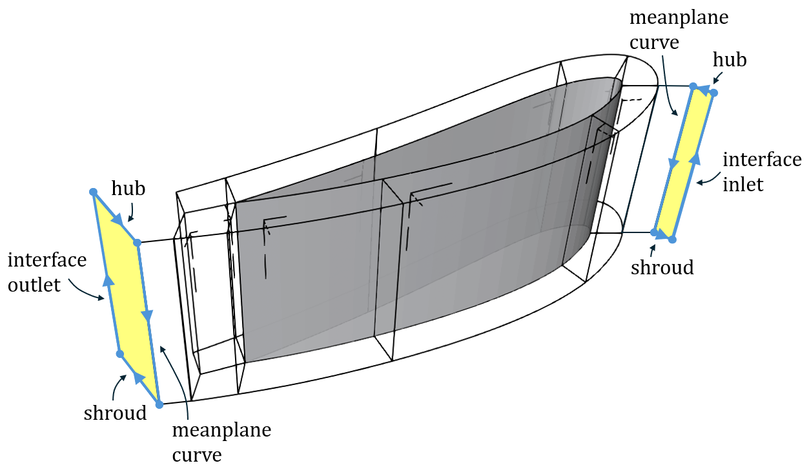
Fig. 54 Boundary curves (blue) and resulting
trans4SidedFace(yellow). Arrows correspond to the curve directions, and labels correspond to the locations listed in Table 5.The created geometries are returned to the analytic geometry container of the calling class.
- build() None[source]
Build part.
This method:
Gets the offset meanplane curves from
aG_.Creates curves on the hub and shroud extending from the offset curves to the respective interfaces along the hub and shroud contours.
Creates curves on the interfaces connecting the hub and shroud curves.
Creates meanplane faces from the generated curves.
- Parameters:
None
- Return type:
None
A meanplane face is created at the inlet and outlet interfaces in a loop that iterates over
mpCurveList. This list has the formatList[Tuple[str, int]]. Two entries are defined in the list:mpCurveList[0]: inlet datampCurveList[1]: outlet data
The tuple entries encode an identifier string
mpCurveList[oc][0]and the normalized parameter coordinatempCurveList[oc][1]of the interface.The following diagram shows the activities performed in this method.
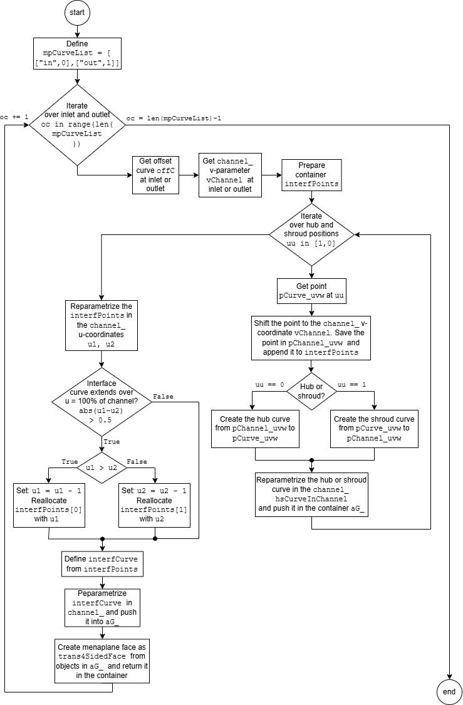
Fig. 55 Activities during the creation of the meanplane face.
Iterate over Inlet and Outlet
The offset meanplane curve of the current interface is allocated to
offC. The v-parameter of the channel interface is allocated tovChannel. A point containerinterfPointsis initialized as avectorDtPoint3object.Iterate over Hub and Shroud Positions
The bounding curves extending along the hub and shroud are created in a loop over the parameter coordinates
uu in [1, 0].Create Points on the current Position
The hub and shroud curves are created from the points
pCurve_uvwandpChannel_uvw.pCurve_uvwis the point onoffCat the current valueuu. It is reparameterized in the parametric space of the channelchannel_.The point
pChannel_uvwis created with the same u-coordinate aspCurve_uvw, while the v- and w-coordinates correspond to the coordinates of the current interface on the channel’s hub or shroud position.The following figure shows the points created in the iterations over the two loops.
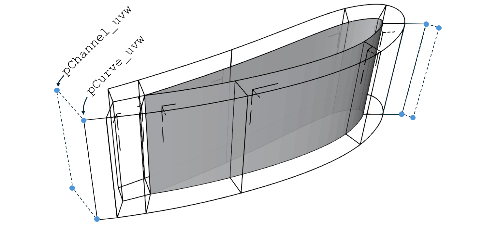
Fig. 56 Points which are created (blue). The labeled points
pCurve_uvwandpChannel_uvwcorrespond to the points created at the outlet (oc == 1) on the hub contour (uu == 0).The point
pChannel_uvwis appended tointerfPointsin each iteration. Through the iteration overuu in [1, 0], the locations of the points in this container are as follows:interfPoints[0]: shroudinterfPoints[1]: hub
Create Hub or Shroud Curve
From the points
pCurve_uvwandpChannel_uvw, the hub or shroud curvehsCurveis created. Depending on whether the current iteration creates the hub or the shroud curve (uu == 0oruu == 1), the direction of the curve is reversed. This results in the hub and shroud curve directions specified in Table 5.The curves are reparameterized in xyz-coordinates and pushed into
aG_with the following naming convention:"hsCurve_"+"u"+str(uu)+"_"+str(mpCurveList[oc][0])
Check if the Interface Curve Extends over u = 100% of the Channel
The bounding curve on the interface is created from the points in
interfPointson the hub and shroud walls.To enable the extension of the interface meanplane surface across 0% of the channel u-coordinate, a check is implemented that detects jumps in the u-coordinates
u1andu2ofinterfPoints[0]andinterfPoints[1].If the normalized u-parameter range of these two points in the channel is greater than 50% (
abs(u1-u2) > 0.5), the larger of the two values is subtracted by one. This shifts the value into the negative parameter range. The shifted parameter is reassigned tointerfPoints.Create the Interface Curve
The interface curve
interfCurveis created from the points ininterfPointsand mapped intochannel_asinterfCurveInChannel. Due to the definition ofinterfPoints, the resulting curve extends from the shroud to the hub walls of the channel. It is pushed intoaG_with the following naming convention:"interfCurve_"+str(mpCurveList[oc][0])
Create the Meanplane Face
The meanplane faces are constructed as
trans4SidedFaceobjects (see Fig. 54) using the curve sequence established in Table 5. The bounding curves are retrieved fromaG_by their names.The face is returned to the geometry container of the calling class with the following name:
prefix_+"_"+label_+"_fe_meanplane_"+mpCurveList[oc][0]+str(1)
{kind=link}
{kind=link}
{kind=link}
{kind=link}
- class dtOOPythonApp.builder.multipleBoundedVolume_gridChannel.multipleBoundedVolume_gridChannel(label: str, channel: dtOOPythonSWIG.analyticGeometry, meanplanes: List[dtOOPythonSWIG.analyticGeometry], couplings: List[dtOOPythonSWIG.analyticGeometry], nBlades: int, nInOutSurfSuction: int = 2, rotVector: dtOOPythonSWIG.dtVector3 = dtOOPythonSWIG.dtVector3, orientation: int = 1)[source]
Create the grid channel as a multiple bounded volume.
This class:
Creates multiple bounded surfaces on the hub and shroud.
Creates bounding faces from the meanplane and coupling faces.
Creates a multiple bounded volume of the grid channel.
- label_
Label.
- Type:
str
- channel_
360° rotated channel domain
- Type:
analyticGeometry
- meanplanes_
List of meanplane faces
- Type:
List[analyticGeometry]
- couplings_
List of coupling faces
- Type:
List[analyticGeometry]
- nBlades_
Number of blades
- Type:
int
- nInOutSurf_
Number of meanplane faces extending from the mesh blocks to the inlet and outlet each
- Type:
int
- rotVector_
Rotation vector of the grid channel.
- Type:
dtVector3
- orientation_
Orientation of the blade in the channel.
1 : Blade is oriented in u-direction of channel
-1 : Blade is oriented in negative u-direction of the channel
- Type:
int
- boundSurf_
Container for bounding surfaces.
- Type:
labeledVectorHandlingAnalyticGeometry
- gridChannel_
Volume of the grid channel.
- Type:
analyticGeometry
Examples
>>> import dtOOPythonSWIG as dtOO
Build channel geometry
>>> channel = dtOO.rotatingMap2dTo3d( ... dtOO.dtVector3(0,0,1), ... dtOO.analyticSurface( ... dtOO.bSplineSurface_bSplineCurveFillConstructOCC( ... dtOO.bSplineCurve_pointConstructOCC( ... dtOO.vectorDtPoint3() ... << dtOO.dtPoint3(+1.00, +0.00, 0.50) ... << dtOO.dtPoint3(+0.50, +0.00, 0.50), ... 1 ... ).result(), ... dtOO.bSplineCurve_pointConstructOCC( ... dtOO.vectorDtPoint3() ... << dtOO.dtPoint3(+0.50, +0.00, 0.50) ... << dtOO.dtPoint3(+0.50, +0.00, 0.00), ... 1 ... ).result(), ... dtOO.bSplineCurve_pointConstructOCC( ... dtOO.vectorDtPoint3() ... << dtOO.dtPoint3(+0.50, +0.00, 0.00) ... << dtOO.dtPoint3(+1.00, +0.00, 0.00), ... 1 ... ).result(), ... dtOO.bSplineCurve_pointConstructOCC( ... dtOO.vectorDtPoint3() ... << dtOO.dtPoint3(+1.00, +0.00, 0.00) ... << dtOO.dtPoint3(+1.00, +0.00, 0.50), ... 1 ... ).result(), ... ).result() ... ) ... )
Define meanplane curves
>>> c_mp0 = dtOO.bSplineCurve_pointConstructOCC( ... dtOO.vectorDtPoint3() ... << dtOO.dtPoint3(+0.50, +0.00, 0.00) ... << dtOO.dtPoint3(+0.50, +0.00, 0.50), ... 1 ... ).result() >>> c_mp1 = dtOO.bSplineCurve_pointConstructOCC( ... dtOO.vectorDtPoint3() ... << dtOO.dtPoint3(+0.60, +0.10, 0.00) ... << dtOO.dtPoint3(+0.55, +0.10, 0.50), ... 1 ... ).result() >>> c_mp2 = dtOO.bSplineCurve_pointConstructOCC( ... dtOO.vectorDtPoint3() ... << dtOO.dtPoint3(+0.95, +0.10, 0.00) ... << dtOO.dtPoint3(+0.90, +0.10, 0.50), ... 1 ... ).result() >>> c_mp3 = dtOO.bSplineCurve_pointConstructOCC( ... dtOO.vectorDtPoint3() ... << dtOO.dtPoint3(+1.00, +0.00, 0.00) ... << dtOO.dtPoint3(+1.00, +0.00, 0.50), ... 1 ... ).result()
Define coupling curve
>>> c_coup = dtOO.bSplineCurve_pointConstructOCC( ... dtOO.vectorDtPoint3() ... << dtOO.dtPoint3(+0.85, +0.25, 0.00) ... << dtOO.dtPoint3(+0.85, +0.15, 0.50), ... 1 ... ).result()
Create meanplane faces in the channel from the curves
>>> mp0 = dtOO.analyticSurface( ... dtOO.bSplineSurface_exchangeSurfaceConstructOCC( ... dtOO.bSplineSurface_skinConstructOCC( ... c_mp0, c_mp1 ... ).result() ... ).result() ... ) >>> mp1 = dtOO.analyticSurface( ... dtOO.bSplineSurface_exchangeSurfaceConstructOCC( ... dtOO.bSplineSurface_skinConstructOCC( ... c_mp1, c_mp2 ... ).result() ... ).result() ... ) >>> mp2 = dtOO.analyticSurface( ... dtOO.bSplineSurface_exchangeSurfaceConstructOCC( ... dtOO.bSplineSurface_skinConstructOCC( ... c_mp2, c_mp3 ... ).result() ... ).result() ... )
Create coupling faces from meanplane curves and coupling curve
>>> coup0 = dtOO.analyticSurface( ... dtOO.bSplineSurface_exchangeSurfaceConstructOCC( ... dtOO.bSplineSurface_skinConstructOCC( ... c_mp2, c_coup ... ).result() ... ).result() ... ) >>> coup1 = dtOO.analyticSurface( ... dtOO.bSplineSurface_exchangeSurfaceConstructOCC( ... dtOO.bSplineSurface_skinConstructOCC( ... c_coup, c_mp1 ... ).result() ... ).result() ... )
Make a list containing the meanplane and coupling faces
>>> meanplaneFaces = [ ... dtOO.map2dTo3d.MustDownCast(mp0), ... dtOO.map2dTo3d.MustDownCast(mp1), ... dtOO.map2dTo3d.MustDownCast(mp2), ... ]
>>> couplingFaces = [ ... dtOO.map2dTo3d.MustDownCast(coup0), ... dtOO.map2dTo3d.MustDownCast(coup1), ... ]
Create the grid channel
>>> from dtOOPythonApp.builder import multipleBoundedVolume_gridChannel >>> gridChannel = multipleBoundedVolume_gridChannel( ... label = "test", ... channel = channel, ... meanplanes = meanplaneFaces, ... couplings = couplingFaces, ... nBlades = 12, ... nInOutSurfSuction = 1 ... ) >>> gridChannel.build()
Return the multiple bounded volume and a list with the bounding faces
>>> gc, gcFaces = gridChannel.getGridChannel()
Check the class of the returned volume
>>> gc.virtualClassName() 'multipleBoundedVolume'
The main method of this class is
build().The grid channel is built as a multiple bounded volume. It forms the part of the bladed channel mesh that is not occupied by the mesh blocks. The construction of the multiple bounded volume requires a set of bounding surfaces.
The bounding surfaces
boundSurfs_are based on the meanplane and coupling faces provided to the class through the listsmeanplanes_andcouplings_. The following figure shows the surfaces inmeanplanes_andcouplings_.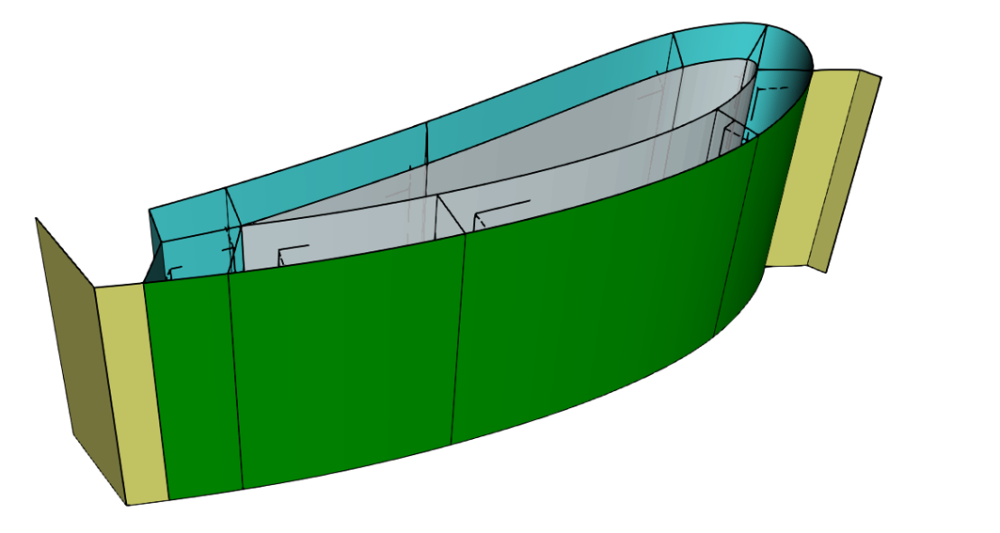
Fig. 57 Meanplane faces (yellow and green) and coupling faces (cyan) provided to this class. The blade (grey) is shown for reference.
The grid channel is formed on the blade side from the coupling faces of the mesh blocks (cyan) and the FE-Meanplane faces (Fig. 57 yellow).
The bounding faces on the opposing side of the grid channel are formed through a rotational translation of the faces in
meanplanes_(Fig. 57 yellow and green). These rotated faces form the periodic pressure faces of the bladed channel.The inlet and outlet faces (Fig. 58 red) of the grid channel are created from the rotation of the interface curves of the FE-Meanplane faces. The FE-Meanplane face from which the inlet interface is created is the last face in the meanplane list
meanplanes_[-1]. The face from which the outlet is created is the first face in the meanplane listmeanplanes_[0].The rotation angle is defined through the number of blades
nBlades_in the full 360° channel. The rotation vector is provided throughrotVector_.The bounding surfaces on the hub and shroud are created as multiple bounded surfaces. The required bounding curves (Fig. 58, pink) are generated from the edges of the other bounding faces of the grid channel. The multiple bounded surfaces need bounding faces on the hub and shroud of the channel geometry
channel_in which the bounding curves are located.The input
orientation_encodes the orientation of the blade within the channel. The following values are supported:1: Blade is oriented in the positive u-direction of the channel-1: Blade is oriented in the negative u-direction of the channel
The method
calcRotParams()is used to ensure that the bounding faces of the multiple bounded surfaces extend over the correct hub and shroud regions.The bounding surfaces are appended to the list
boundSurf_The boundary faces of the grid channel and the bounding curves of the hub boundary face, are shown in the following figure.

Fig. 58 Bounding faces of the grid channel with periodic faces (yellow / green), inlet and outlet (red), coupling faces (cyan) and bounding curves of the hub boundary (pink). The blade (grey) is shown for reference.
The following face labels are used for the bounding faces:
"inlet": Inlet boundary (Fig. 58 red)"outlet": Outlet boundary (Fig. 58 red)"suction_tri_" + str(i): Suction boundary built from meanplane faces (Fig. 58 and Fig. 57 yellow)"coupling_" + str(i): Boundary connecting to the blade mesh block (Fig. 58 cyan)"pressure_tri_" + str(i): Pressure boundary built from rotated meanplane faces (Fig. 58 yellow)"pressure_quad_" + str(i): Pressure boundary built from rotated meanplane faces (Fig. 58 green)"hub": Multiple bounded surface on the hub"shroud": Multiple bounded surface on the shroud
The strings
"pressure"and"suction"correspond to the periodic faces associated with the pressure and suction sides of a turbine channel created with this class.The markers
"tri"and"quad"in the naming of the pressure and suction boundaries are used to distinguish between faces meshed unstructured with prism elements and faces meshed transfinite with hexahedral elements.The grid channel is created from the faces in
boundSurf_and stored ingridChannel_.The method
getGridChannel()returns the grid channelgridChannel_together with a list of the bounding facesboundSurf_If debug mode is enabled, the bounding faces can be plotted using the following naming convention:
"debug_gridChannelFace_" + label_ + "_" + face.getLabel()
- build() None[source]
Build part.
This method:
Creates multiple bounded surfaces on the hub and shroud.
Creates bounding faces from the meanplane and coupling faces.
Creates a multiple bounded volume representing the grid channel.
- Parameters:
None
- Return type:
None
This method creates the grid channel from the faces in
meanplanes_andcouplings_. The following figure illustrates the operations performed.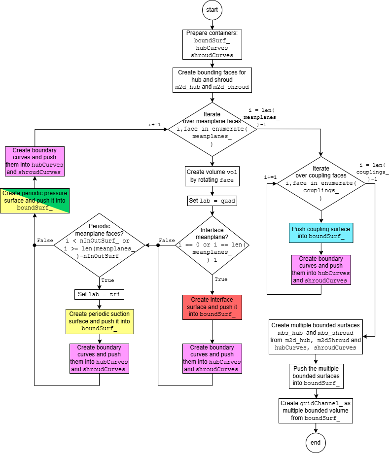
Fig. 59 Activity diagram of class multipleBoundedVolume_gridChannel. Colors correspond to the creation of geometries shown in Fig. 57 and Fig. 58.
Prepare Containers
Three vector-handling containers are created. The container
boundSurf_stores the bounding surfaces of the multiple bounded volume. The containershubCurvesandshroudCurvesstore the bounding curves of the multiple bounded surfaces that define the hub and shroud boundaries of the grid channel.Create Bounding faces for the Multiple Bounded Surfaces on Hub and Shroud
To create the multiple bounded surfaces, bounding faces on the hub and shroud are required. To ensure that these surfaces extend over the full grid channel domain, the hub and shroud points
p0handp0sat the inlet or outlet, depending onorientation_, are extracted frommeanplanes_.By passing these points to the method
calcRotParams(), their u-coordinate within the channel, including a tolerance, is calculated. The hub and shroud bounding facesm2d_hubandm2d_shrare then created by rotating a segment of the channelchannel_at this u-coordinate on the hub or shroud aroundrotVector_.Iterate over meanplane faces
for i, face in enumerate(meanplanes_):
The periodic faces as well as the inlet and outlet boundaries of the grid channel are created by iterating over
meanplanes_.A volume
volis created by rotating the current meanplane faceface. The bounding surfaces of the grid channel are extracted fromvolas segments of constant parameter coordinates.Initially, the string
labis set to"quad".Interface Meanplane
i == 0 or i == len(meanplanes_) - 1
If the iteration processes the first or last meanplane face, an inlet or outlet interface boundary is created. By definition of
meanplanes_, the first entryi == 0contains the outlet meanplane surface, while the last entryi == len(meanplanes_) - 1contains the inlet surface.The inlet and outlet boundaries are added to
boundSurf_with the labels"inlet"and"outlet", respectively.The corresponding bounding curves on the hub and shroud are appended to
hubCurvesandshroudCurves.Periodic FE-Meanplane faces
i < nInOutSurf_ or i >= len(meanplanes_) - nInOutSurf_
The first and last
nfaces inmeanplanes_are part of the boundary surfaces (compare Fig. 57 and Fig. 58). The number of these faces is specified bynInOutSurf_.If the iteration is processing one of these faces, the value of
labis changed to"tri". These faces are added toboundSurf_with the label"suction_" + lab + "_" + str(i)
The corresponding bounding curves on the hub and shroud are added to the respective containers.
Create Periodic Pressure Surfaces
In every iteration, the rotated meanplane face is added to
boundSurf_with the following label:"pressure_" + lab + "_" + str(i)
The associated bounding curves are appended to
hubCurvesandshroudCurves.Iterate over coupling faces
for i, face in enumerate(couplings_):
All coupling faces are part of the grid channel boundary surfaces. The last two faces in
couplings_correspond to the faces downstream of the trailing edge and are oriented orthogonally to the flow direction. These faces are oriented differently from the remaining coupling faces.The condition
i >= len(couplings_) - 2identifies these faces and ensures that the correct bounding curves are added tohubCurvesandshroudCurves.Create the Multiple Bounded Surfaces on the Hub and Shroud
The multiple bounded surfaces on the hub and shroud,
mbs_hubandmbs_shroud, are created fromm2d_hubandm2d_shrtogether with the lists of bounding curveshubCurvesandshroudCurves.Create the Grid Channel
The grid channel volume is created using the
dtOOclassmultipleBoundedVolumefromboundSurf_. The resulting object is stored ingridChannel_.
- calcRotParams(p0) float[source]
Calculate the u-parameter of a point within the channel.
This method:
Reparametrizes a point in channel coordinates.
Offsets the u-parameter by
0.01.Corrects the value if the parameter becomes negative.
Returns the resulting u-parameter.
- Parameters:
p0 (dtPoint3) – Cartesian point within the channel.
- Returns:
uvwP0 – u-parameter of the point in the channel reduced by the tolerance.
- Return type:
float
- getGridChannel() Tuple[dtOOPythonSWIG.analyticGeometry, List[dtOOPythonSWIG.analyticGeometry]][source]
Return the grid channel volume
gridChannel_and its bounding surfacesboundSurf_.- Parameters:
None
- Returns:
gridChannel_ (analyticGeometry) – Multiple bounded volume of the grid channel
boundSurf_ (labeledVectorHandlingAnalyticGeometry) – List of bounding faces
{kind=link}
{kind=link}
- class dtOOPythonApp.builder.map3dTo3dGmsh_gridFromMultipleBoundedVolumeAndBlocks.map3dTo3dGmsh_gridFromMultipleBoundedVolumeAndBlocks(label: str, channel: dtOOPythonSWIG.analyticGeometry, channelFaces: List[dtOOPythonSWIG.analyticGeometry], blocks: List[dtOOPythonSWIG.analyticGeometry], nMeanplaneBlocks: int, blade: dtOOPythonSWIG.analyticGeometry, nBoundaryLayers: int, nElementsSpanwise: int, nElementsNormal: int, firstElementSizeHubToShroud: float, firstElementSizeNormalBlade: float, bladeHubElementSize: dtOOPythonSWIG.scaOneD = None, bladeHubElementScale: float = None, bladeShroudElementSize: dtOOPythonSWIG.scaOneD = None, bladeShroudElementScale: float = None, charLengthMin: float = 0.05, charLengthMax: float = 0.1, meshTEBlocks: bool = False)[source]
Create mesh’s topology as map3dTo3dGmsh.
This class:
Creates the mesh toploogy of bladed channels
Adds the geometries of the unstructured region as a multiple bounded volume and a list of bounding surfaces.
Adds the mesh blocks.
Applies mesh settings.
Returns the toplology into the container of the calling class.
- label_
Label.
- Type:
str
- channel_
Channel.
- Type:
multipleBoundedVolume
- channelFaces_
List of bounding faces surrounding the channel
- Type:
List[ map2dTo3d ]
- blocks_
List of mesh blocks surrounding the blade.
- Type:
List[ map3dTo3d ]
- nMeanplaneBlocks_
Number of block faces which are part of the meanplane
- Type:
int
- blade_
Blade.
- Type:
map2dTo3d
- nBoundaryLayers_
Number of boundary layers.
- Type:
int
- nElementsSpanwise_
Number of elements in spanwise direction.
- Type:
int
- nElementsNormal_
Number of elements on the blade surface.
- Type:
int
- firstElementSizeHubToShroud_
Size of first element on hub and shroud.
- Type:
float
- firstElementSizeNormalBlade_
Size of first element at the blade in normal to the blade direction.
- Type:
float
- bladeHubElementSize_
Function describing the element size versus the standardized unwrapped length of the blade at the hub.
- Type:
scaOneD
- bladeHubElementScale_
Factor defining the number of elements at the hub for each mesh block.
- Type:
float
- bladeShroudElementSize_
Function describing the element size versus the standardized unwrapped length of the blade at the shroud.
- Type:
scaOneD
- bladeShroudElementScale_
Factor defining the number of elements at the shroud for each mesh block.
- Type:
float
- meshTEBlocks_
Marker if trailing edge mesh blocks should be meshed
- Type:
Bool
- map3dTo3dGmshJson_
JSON structure for map3dTo3dGmsh.
- Type:
jsonPrimitive
- Return type:
None
Examples
The main method of this class is
build().The mesh topology is constructed from the channel, represented as a multiple bounded volume
channel_, and the blade mesh blocks provided in the listblocks_. Throughout this documentation,Ndenotes the number of mesh blocks, i.e.,len(blocks_).The mesh regions are numbered as follows:
R_0: ChannelR_1: First mesh block…
R_(N-1): (N-1)th mesh block
The multiple bounded volume is meshed using an unstructured mesh with prismatic boundary layers. The mesh block volumes are meshed as transfinite regions with recursive recombination.
The topology settings are initialized from
map3dTo3dGmshJson_. The model is created asm3dGmsh.The bounding surfaces of the multiple bounded volume are provided through the list
channelFaces_.The surfaces of the mesh topology are either taken directly from
channelFaces_or extracted from the block volumes inblocks_using the methoddetectFirstAndSecond(). This method takes a block volume as amap3dTo3dobject and a parameter direction as an integer input. It returns the faces located at the normalized positions 0 and 1 along the specified parameter direction.The blade surface is provided through
blade_.The following figure illustrates the surfaces in the mesh topology. The hub and shroud surfaces are not shown.
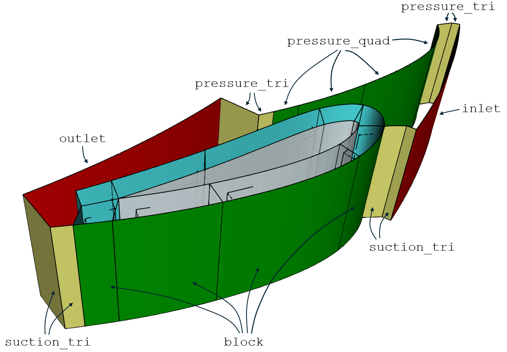
Fig. 60 Topology faces and their labels used in this class. Interfaces (red), periodic mean-plane faces (yellow/green), coupling faces (cyan), and blade surfaces (gray) are highlighted.
By iterating over
blocks_, the corresponding surfaces are added to the topology. For each mesh block, the blade surface is added and labeled with the identifier"blade".The number of mesh block surfaces that belong to the mean plane is specified by the input
nMeanplaneBlocks_. These surfaces do not connect to the multiple bounded volume channel. In this class, they are labeled with the identifier"block".The remaining faces shown in Fig. 60, together with the hub, shroud, and coupling surfaces, are added to the topology through
channelFaces_and labeled according to the strings shown in the figure.The coupling faces between the mesh blocks and the channel multiple bounded volume are labeled with the identifier
"coupling". The hub and shroud bounding surfaces are labeled with the identifiers"hub"and"shroud", respectively.The periodic faces of the topology are those labeled
"suction","pressure", and"block". The labels"suction"and"pressure"correspond to the suction and pressure sides of a turbine blade.Periodically connected faces that are meshed using an unstructured mesh are labeled with the identifier
"tri". The faces periodic to the"block"faces are meshed as transfinite surfaces and are assigned the identifier"quad". Periodicity on these faces is defined using the observerbVOSetRotationalPeriodicity.The boolean value
meshTEBlocks_controls whether trailing-edge mesh blocks are created. If trailing-edge mesh blocks are required, this parameter must be set toTrue.Each face identifier is assigned an integer suffix for unique identification. The following faces are added to the topology when trailing-edge mesh blocks are enabled:
"hub_0"…"hub_"+str(N)"shroud_0"…"shroud_"+str(N)"inlet_0""outlet_0""suction_tri_0","suction_tri_1","suction_tri_"+str(nMeanplaneBlocks_+3),"suction_tri_"+str(nMeanplaneBlocks_+4)"block_0"…"block_"+str(nMeanplaneBlocks_)"pressure_tri_0","pressure_tri_1","pressure_tri_"+str(nMeanplaneBlocks_+3),"pressure_tri_"+str(nMeanplaneBlocks_+4)"pressure_quad_2"…"pressure_quad_"+str(nMeanplaneBlocks_+2)"blade_0"…"blade_"+str(N-1)"coupling_0"…"coupling_"+str(N+2-nMeanplaneBlocks_-1)
Prismatic boundary layers are generated on the
"hub"and"shroud"faces. The number of elements in these layers is specified bynBoundaryLayers_. The boundary layers extend onto the"inlet","outlet","suction","pressure", and"coupling"faces of the multiple bounded volume.The minimum and maximum characteristic mesh sizes of the unstructured mesh are specified by the inputs
charLengthMinandcharLengthMax.The method
extractEdgesInFirstAndSecond()is used to identify the edges of a surface that lie on two other surfaces.The following figure illustrates the edge groups to which mesh settings are applied. Each group is highlighted using a uniform color.

Fig. 61 Edges of the bladed channel to which mesh settings are applied:
hubToShroudLines(orange),bladeHubLinesandbladeShroudLines(blue),bladeToBlockLines(green), and the trailing-edge mesh block edges contained intEMeshList(pink). No explicit mesh settings are applied to the gray edges.Gradings are applied to refine the mesh near the hub, shroud, and blade walls. The method
addGrading()is used to create the grading functions. The methodsgradingsTypeTransfinite()andgradingsGradingFunctions()are then used to apply these gradings to the mesh-setting observerbVOMeshRule.The following table summarizes the edge groups and their corresponding mesh parameters and settings:
Table 6 Edges and their mesh parameters Edge group
Number of elements /
Element size
Grading label /
First element size
hubToShroudLinesnElementsSpanwise_"hubToShroud"firstElementSizeHubToShroud_bladeHubLinesbladeHubElementSize_"tangentialBlade_*"bladeShroudLinesbladeShroudElementSize_"tangentialBlade_*"bladeToBlockLinesnElementsNormal_"normalBlade"firstElementSizeNormalBlade_tEMeshListnElementsNormal_No grading
The mesh parameters beginning with
nElements...specify a fixed number of elements along each edge. The parameters beginning withfirstElementSize...define the size of the first element adjacent to the wall on which the grading is applied.The mesh sizes along the blade contour (
bladeHubLinesandbladeShroudLines) are controlled by the functionsbladeHubElementSize_andbladeShroudElementSize_, respectively. For each edge, a minimum number of elements is first determined from its start and end vertices. The blending factorsbladeHubElementScale_andbladeShroudElementScale_are then used to interpolate between the element counts at both ends, thereby defining the number of elements assigned to the edge.To ensure a smooth transition in element sizes between consecutive edges, the
"tangentialBlade_*"grading is adjusted at both the start and end vertices.Trailing-edge mesh blocks are generated only if
meshTEBlocks_is set toTrue. The corresponding edges are collected in the listtEMeshList. No grading functions are applied to these edges.The observer
bVOFaceToPatchRuleis used to rename the following faces so that they match the boundary naming convention of the OpenFOAM case:Table 7 Renaming of the faces for openFOAM case setup. Original name
Boundary name
"*hub*"label_+"_hub""*shroud*"label_+"_shroud""*blade*"label_+"_blade""*inlet*"label_+"_inlet""*outlet*"label_+"_outlet""*suction*"label_+"_suction""*block*"label_+"_suction""*pressure*"label_+"_pressure"If debug mode is enabled the geometries are plotted and prefixed with
"debug_".The following observers are also added:
bVOReadMSHbVODumpModelbVOWriteMSHbVOOrientCellVolumes
Finally, the mesh topology is returned to the calling class through
appendBoundedVolume.A mesh resulting from this topology is shown in the following figure.

Fig. 62 Mesh of a bladed channel resultuing from the described topology.
- build() None[source]
Build part.
- Parameters:
None
- Return type:
None
The model is initialized as
m3dGmshfrommap3dTo3dGmshJson_. The containeraGof typelabeledVectorHandlingAnalyticGeometryis created to manage the analytic geometries.Add the Grid Channel Volume and Faces
The multiple bounded volume of the grid channel``channel_`` is added to the model. Its bounding faces are added by iterating over the list
channelFaces_. Regular faces, for whichmultipleBoundedSurface.ConstDownCast(face) == Noneapplies, are added directly toaG. The hub and shroud faces are of the typemultipleBoundedSurface. For these faces, theelsebranch is executed and their bounding surfaces are added individually.The face labels are assigned during the generation of the multiple bounded volume in the class multipleBoundedVolume_gridChannel.
Add the Mesh Block Volumes and Faces
The block volumes and their faces are added by iterating over
blocks_usingi, block in enumerate(blocks_). The block faces on the blade wall and the surrounding surfaces are extracted using the methoddetectFirstAndSecond(). The faces on the blade wall are labeled"blade_" + str(i), while the surrounding surfaces are labeled"block_" + str(i).The block volumes are ordered so that their sequence in
blocks_follows the u-direction of the blade surfaceblade_. If trailing-edge mesh blocks exist, they correspond to the first and last entries ofblocks_.If trailing-edge mesh blocks are enabled (
meshTEBlocks_ == True), the blade faces of the first and last mesh blocks are not added toaG. Only block faces that are part of the mean plane are added toaG(i <= nMeanplaneBlocks_), corresponding to the"block"faces shown in Fig. 60.The block volumes are added to the model as
dtRegionobjects and configured to be meshed using transfinite meshing with recursive recombination.The observer
bVONameRegionsis added to establish the naming convention of the regions.Organize Edges of the Trailing-Edge Mesh Blocks
The edges of the trailing-edge mesh blocks (shown in pink in Fig. 61) are extracted by first obtaining the blade and block faces of
blocks_[0]andblocks_[-1]usingdetectFirstAndSecond(). Their hub and shroud edges are then identified usingextractEdgesInFirstAndSecond().Using these edges, the list
tEMeshListis constructed with the following structure:tEMeshList = List[ Tuple[ Tuple[List[int], List[int]], int ] ]
The top-level list entries have the following meaning:
tEMeshList[0]: Edges extending directly from the bladetEMeshList[1]: Edges extending from the outer wall of the first mesh blocktEMeshList[2]: Edges extending from the outer wall of the last mesh block
The lower-level entries of
tEMeshListare defined as follows:tEMeshList[i][0]: Tuple containing lists of edge identifierstEMeshList[i][0][0]: List of edge identifiers on the hubtEMeshList[i][0][1]: List of edge identifiers on the shroudtEMeshList[i][1]: Integer specifying the edge direction
Manage Faces
The observer
bVOAnalyticGeometryToFaceis added to implement the faces stored inaGwithinm3dGmsh.The periodic faces (shown in yellow and green in Fig. 60) are organized in the list
periodics. The list is constructed such that each entryperiodics[i]is aTuplecontaining a pair of periodic faces. The suction-side boundary is stored inperiodics[i][0]and the corresponding pressure-side boundary inperiodics[i][1].The faces that are meshed unstructured, and their hub-to-shroud edges, are stored in the list
unstrFacesAndh2sLines. These faces are identified inaGby their physical labels"inlet","outlet","suction_tri", and"pressure_tri"(see Fig. 60).The list has the following structure:
unstrFacesAndh2sLines = List[ List[ map2dTo3d, List[int] ] ]
Each entry contains an unstructured face,
unstrFacesAndh2sLines[i][0], and the list of its edges that extend from hub to shroud,unstrFacesAndh2sLines[i][1].Manage Edges and Set Number of Elements
The edges to which mesh settings are applied (see Fig. 61) are identified by extracting and organizing lists of edge identifiers returned by the
dtGmshModel.The following edge-identifier lists are used to define the mesh settings:
hubToShroudLinesbladeToBlockLinesbladeHubLinesbladeShroudLines
The dictionary
gradingsis created, and grading functions for the edges inhubToShroudLinesandbladeToBlockLinesare added using the methodaddGrading().This method takes the
gradingsdictionary, a grading function, a label, the model, and the size of the first element in the grading as input.The grading associated with
hubToShroudLinesis assigned the label"hubToShroud"and uses the first-element sizefirstElementSizeHubToShroud_. The grading associated withbladeToBlockLinesis assigned the label"normalBlade"and uses the first-element sizefirstElementSizeNormalBlade_.The number of elements and the grading functions are then applied to the edges according to the specifications listed in Table 6.
The mesh settings for the blade edges
bladeShroudLinesandbladeHubLinesare applied by iterating over the corresponding edge lists.Mesh settings for the trailing-edge mesh-block edges are applied only if
meshTEBlocks_ == True.Mesh Settings along the Blade
The orientation of the blade edges is determined using
boundaryEdgeDirection(). The method is provided withm3dGmsh.getModel()and a list containing the blade surfaceblade_together with the corresponding edge lists.For each edge, the edge length
eLis computed and the start and end verticesv0andv1are identified. These points are reparameterized onto the blade surfaceblade_, yielding the surface parameter coordinatesp0_uvandp1_uv.Depending on the iteration the element-size functions
bladeHubElementSize_orbladeShroudElementSize_are then evaluated at the corresponding parameter coordinates to obtain the local element sizesms_0andms_1in the appropriate parameter direction.Using these element sizes and the edge length
eL, the required numbers of elements,nE_0andnE_1, are computed and rounded up to the next integer.The final number of elements assigned to the blade edge is calculated as
nE = math.ceil( min(nE_0, nE_1) + elementScale * abs(nE_1 - nE_0) )
The floating-point value
elementScalecorresponds to eitherbladeShroudElementScale_orbladeHubElementScale_, depending on the current iteration.For each edge, a grading function with the label
"tangentialBlade_*"is created. The start and end element sizes of the grading are set toms_0andms_1, respectively.Set Mesh Rules
The boundary-layer directions of the unstructured faces stored in
unstrFacesAndh2sLinesare determined usingdetectBoundaryLayerDir(), which returns the listboundaryLayerDir.The mesh rules are defined using the observer
bVOMeshRule. The methodsgradingsTypeTransfinite()andgradingsGradingFunction()are used to retrieve the appropriate grading information from thegradingsdictionary and pass it to the observer.Meshing of the unstructured region is performed using the rules
"dtMeshGFaceWithTransfiniteLayer"and"dtMeshGRegionWithBoundaryLayer".The rule
"dtMeshGFaceWithTransfiniteLayer"is applied to the faces that are meshed unstructured, namely"*inlet*","*outlet*","*suction_tri*"and"*pressure_tri*".The rule
"dtMeshGRegionWithBoundaryLayer"is applied to the region corresponding to the multiple bounded volume,"R_0". The hub and shroud faces,"hub_0"and"shroud_0", on which the boundary layers are generated, are added to the"_faceLabel"entry.The boundary layers extend onto the faces of
"R_0"labeled"*inlet*","*outlet*","*pressure_*","*suction_*", and"*coupling_*". These faces are added to the"_slidableFaceLabel"entry.The number of boundary-layer elements is specified by
nBoundaryLayers_, while the boundary-layer orientation is defined byboundaryLayerDir.Define Observers
The observers
bVOReadMSHandbVODumpModelare then added.To define rotational periodicity, a reference coordinate system
theTis created and added to the base container objectbC. The periodic boundary conditions are established by iterating overperiodicsand creating abVOSetRotationalPeriodicityobserver for each pair of periodic faces.The faces are renamed to match the boundary-condition naming convention used in an OpenFOAM case through the observer
bVOFaceToPatchRule. The corresponding renaming rules are summarized in Table 7.The observer
bVOWriteMSHcontrols the generation of the mesh file. The observerbVOOrientCellVolumesensures that all mesh cell volumes have a positive orientation.The created mesh topology
m3dGmshis returned to the calling class using the methodappendBoundedVolume.
- static detectFirstAndSecond(channel: dtOOPythonSWIG.map3dTo3d, direction: int) Tuple[dtOOPythonSWIG.map2dTo3d, dtOOPythonSWIG.map2dTo3d][source]
Detect first and second faces in a volume’s parameter direction.
This method returns the faces of a map3dTo3d object at 0 and 100 percent of the u-, v-, or w-paramter.
- Parameters:
channel (map3dTo3d) – Volume.
direction (int) –
Direction in uvw
1 -> U
2 -> V
3 -> W
- Returns:
first (map2dTo3d) – First segment in direction
second (map2dTo3d) – Second segment in direction
- static extractEdgesInFirstAndSecond(theModel: dtOOPythonSWIG.dtGmshModel, faces: List[dtOOPythonSWIG.map2dTo3d], first: dtOOPythonSWIG.map2dTo3d, second: dtOOPythonSWIG.map2dTo3d) Tuple[List[int], List[int]][source]
Extracts edges of faces which lie on another first or second face.
This method:
Iterates over
facesand extracts the edges of each faceChecks if any of the edges are located on the
firstfaceAppends the edge to
firstEdgesif the check appliesChecks if any of the edges are located on the
secondfaceAppends the edge to
secondEdgesif the check appliesReturns
firstEdgesandsecondEdges
- Parameters:
theModel (dtGmshModel) – Gmsh model
faces (List[map2dTo3d]) – List of faces
first (map2dTo3d) – First face
second (map2dTo3d) – Second face
- Returns:
firstEdges (List[int]) – Edges of on first face
secondEdges (List[int]) – Edges of on second face
- static boundaryEdgeDirection(theModel: dtOOPythonSWIG.dtGmshModel, boundaryLayerDirCheck: List[List[dtOOPythonSWIG.map2dTo3d | List[int]]]) int[source]
Determine the boundary-layer direction of a face from two edges.
This method:
Iterates over the faces and edges in the input list.
Checks whether the u- or v-parameters of the start and end points of the edges on a face are equal within a specified tolerance.
Determines and returns the corresponding boundary-layer direction.
- Parameters:
theModel (dtGmshModel) – Gmsh model.
boundaryLayerDirCheck (List[List[map2dTo3d, List[int]]]) –
List containing faces and their corresponding edges.
The entries are organized as follows:
boundaryLayerDirCheck[i]: One face and its associated edges.boundaryLayerDirCheck[i][0]: Face.boundaryLayerDirCheck[i][1]: List of edges.
- Returns:
Integer encoding the boundary-layer direction.
- Return type:
int
The boundary-layer direction is determined by iterating over
faceLines in boundaryLayerDirCheckin an outer loop and over the edgesline in faceLines[1]in the inner loop.During each iteration of the inner loop, the start and end points
p0_uvandp1_uvof the current edge are reparameterized in the parameter space of the surfaceface.The method
inTolerance()is used to determine whether the difference between the u- or v-parameters lies within the tolerance specified bytol. Depending on the result, the value ofboundaryLayerDirTis incremented. The resulting value is appended to the listboundaryLayerDir.At the end of each outer-loop iteration, duplicate entries in
boundaryLayerDirare removed usingboundaryLayerDir = list(dict.fromkeys(boundaryLayerDir)).Within this workflow, all boundary-layer directions must be oriented consistently. The condition
len(boundaryLayerDir) != 1is therefore used to verify that all detected directions are identical. If this condition is not satisfied, an exception is raised.Finally, the boundary-layer direction is encoded as an integer return value. If
boundaryLayerDir[0]equals1, the method returns0. IfboundaryLayerDir[0]equals2, the method returns1. Any other value results in an exception.
- static detectBoundaryLayerDirection(theModel: dtOOPythonSWIG.dtGmshModel, boundaryLayerDirCheck: List[List[dtOOPythonSWIG.map2dTo3d | List[int]]]) int[source]
Determine the boundary layer direction of a face from two edges.
This method:
Returns integer value encoding the boudary edge direction
- Parameters:
theModel (dtGmshModel) – Gmsh model
boundaryLayerDirCheck (List[ List[ map2dTo3d, List[int]]]) –
List containing faces and corresponding edges. Entries correlate to:
boundaryLayerDirCheck[i] : Set of one face and its edges
boundaryLayerDirCheck[i][0] : Face
boundaryLayerDirCheck[i][1] : List of edges
- Return type:
int
- inTolerance(p0: float, p1: float) bool[source]
Check if two float values lie within a tolerance.
This method:
Calculates the difference between two float values
Returns boolean depending if tolerance is met
- Parameters:
tol (float) – Tolerance
p0 (float) – First value
p1 (float) – Second value
- Return type:
bool
- addGrading(gradings: Dict, theRef: dtOOPythonSWIG.scaOneD, gradingLabel: str, m3dGmsh: dtOOPythonSWIG.map3dTo3dGmsh = None, firstElementSize: float = 0.0, lastElementSize: float = 0.0) Dict[source]
Create a grading and add it to the grading dictionary.
This method:
Creates an entry in the grading dictionary.
Labels the grading function and appends it to the container.
Creates an observer for the grading.
Returns the updated grading dictionary.
- Parameters:
gradings (Dict) –
Grading dictionary.
Each key corresponds to a grading identifier and contains the following information:
gradingLabel(List[int, str]): A list containing the grading number and a string identifier.
theRef (scaOneD) – Grading function.
gradingLabel (str) – Grading label.
m3dGmsh (map3dTo3dGmsh) – Gmsh topology object.
firstElementSize (float) – Size of the first element in the grading.
lastElementSize (float) – Size of the last element in the grading.
- Returns:
Updated grading dictionary.
Each key corresponds to a grading identifier and contains the following information:
gradingLabel(List[int, str]): A list containing the grading number and a string identifier.
- Return type:
Dict
For a new grading, an entry is created in the dictionary
gradingsusinggradingLabelas the key. The corresponding value is a list containing a unique grading number and identifier string of the formlabel_ + "_gradings_" + str(gradingNumber) + "_" + gradingLabel
The grading function
theRefis assigned this identifier string and added to the analytic function container of the calling class.Depending on whether the grading specifies only the first element size,
(firstElementSize > 0.0) and (lastElementSize == 0.0), or both the first and last element sizes,(firstElementSize > 0.0) and (lastElementSize > 0.0), an observer of typebVOSetPrescribedElementSizeis created using the specified element sizes and the grading function.The observer is then added to the topology.
Finally, the updated grading dictionary is returned.
- static gradingsTypeTransfinite(gradings: Dict) str[source]
Get the list of grading numbers and return it as a string.
This method:
Iterates over the entries of the grading dictionary
Appends the grading numbers to a list
Converts the list to a string and returns it
- Parameters:
gradings (Dict) –
Grading dictionary with each key containing identifiers for a grading:
gradingLabel (List[int, str]): Grading label key contains a list with grading number and a identifier string
- Return type:
str
- static gradingsGradingFunctions(gradings: Dict) str[source]
Create a string of grading identifiers in a jsonPrimitive format.
This method:
Iterates over the entries of the grading dictionary
Appends the grading identifiers in the format of a jsonPrimitive
Returns the string
- Parameters:
gradings (Dict) –
Grading dictionary with each key containing identifiers for a grading:
gradingLabel (List[int, str]): Grading label key contains a list with grading number and a identifier string
- Returns:
retStr – Return string
- Return type:
str
{kind=link}
- class dtOOPythonApp.builder.analyticGeometry_layerRegion.analyticGeometry_layerRegion(label: str, speHub: List[dtOOPythonSWIG.analyticGeometry], speShroud: List[dtOOPythonSWIG.analyticGeometry], inOutCurves: List[dtOOPythonSWIG.analyticGeometry], layer_thickness: float = 0, layer_supports: List[float] = [], rotVector: dtOOPythonSWIG.dtVector3 = dtOOPythonSWIG.dtVector3, origin: dtOOPythonSWIG.dtPoint3 = dtOOPythonSWIG.dtPoint3)[source]
Create flow channel as five or six sided layer regions on the walls and a multiple bounded volume inside the flow domain.
This class:
Takes hub, shroud, inlet and outlet curves of the layered region.
Creates layer boundary curves on the hub and shroud walls.
Creates layer faces from the boundary curves.
Creates layer volumes by rotating the boundaries.
Creates a multiple bounded volume in the flow channel connecting to the layers.
- label_
Label.
- Type:
str
- rotVector_
Rotation vector.
- Type:
dtVector3
- origin_
Origin.
- Type:
dtPoint3
- normalAxis_
Normal direction of the 2d region curves.
- Type:
dtVector3
- speCenter_
Center point of the bounding box of the region.
- Type:
dtPoint3
- speBb_
Bounding box of the whole region.
- Type:
pairDtPoint3
- hubLayerCurves_
Boundary curves of the hub wall.
- Type:
List[analyticGeometry]
- hubRadZero_
List containing information about which hub curves are on a radius of zero.
- Type:
List[Bool]
- hubUnstructBounds_
Boundary curves of the multiple bounded volume at the hub.
- Type:
List[analyticGeometry]
- shroudLayerCurves_
Boundary curves of the shroud Layer regions.
- Type:
List[List[analyticGeometry]]
- shroudRadZero_
List containing information about which shroud curves are on a radius of zero.
- Type:
List[Bool]
- shroudUnstructBounds_
Boundary curves of the multiple bounded volume at the shroud.
- Type:
List[analyticGeometry]
- interfaceUnstructBound_
Inlet boundary curve of the multiple bounded volume.
- Type:
analyticGeometry
- outletUnstructBound_
Outlet boundary curve of the multiple bounded volume.
- Type:
analyticGeometry
- unstructVH_
vector handler containing all boundary curves of the multiple bounded volume.
- Type:
vectorHandlingAnalyticGeometry
- hubLayers_
List containing the faces of the six sided hub layers.
- Type:
List[analyticGeometry]
- shroudLayers_
List containing the faces of the six sided shroud layers.
- Type:
List[analyticGeometry]
Examples
>>> import dtOOPythonSWIG as dtOO
Define inlet, outlet, hub and shroud curves of the layer.
>>> inlet = dtOO.analyticCurve( ... dtOO.bSplineCurve_pointConstructOCC( ... dtOO.vectorDtPoint3() ... << dtOO.dtPoint3(0.50, +0.00, 0.80) ... << dtOO.dtPoint3(0.75, +0.00, 0.80) ... << dtOO.dtPoint3(1.00, +0.00, 1.00), ... 2 ... ).result() ... ) >>> outlet = dtOO.analyticCurve( ... dtOO.bSplineCurve_pointConstructOCC( ... dtOO.vectorDtPoint3() ... << dtOO.dtPoint3(0.00, +0.00, 0.00) ... << dtOO.dtPoint3(1.10, +0.00, 0.00), ... 1 ... ).result() ... ) >>> hub0 = dtOO.analyticCurve( ... dtOO.bSplineCurve_pointConstructOCC( ... dtOO.vectorDtPoint3() ... << dtOO.dtPoint3(0.50, +0.00, 0.80) ... << dtOO.dtPoint3(0.25, +0.00, 0.60) ... << dtOO.dtPoint3(0.00, +0.00, 0.40), ... 2 ... ).result() ... ) >>> hub1 = dtOO.analyticCurve( ... dtOO.bSplineCurve_pointConstructOCC( ... dtOO.vectorDtPoint3() ... << dtOO.dtPoint3(0.00, +0.00, 0.40) ... << dtOO.dtPoint3(0.00, +0.00, 0.00), ... 1 ... ).result() ... ) >>> shroud0 = dtOO.analyticCurve( ... dtOO.bSplineCurve_pointConstructOCC( ... dtOO.vectorDtPoint3() ... << dtOO.dtPoint3(1.00, +0.00, 1.00) ... << dtOO.dtPoint3(1.10, +0.00, 0.00), ... 1 ... ).result() ... )
Create the input lists with the boundary curves.
>>> speHub = [hub0, hub1] >>> speShroud = [shroud0] >>> inOutCurves = [inlet, outlet]
Initialize the builder.
>>> from dtOOPythonApp.builder import analyticGeometry_layerRegion >>> builder = analyticGeometry_layerRegion( ... label = "test", ... speHub = speHub, ... speShroud = speShroud, ... inOutCurves = inOutCurves, ... layer_thickness = 0.2, ... layer_supports = [0.33, 0.66] ... ).enableDebug() >>> builder.build()
Build the multiple bounded volume of the layer region.
>>> unstrReg, surf = builder.getUnstructuredRegion(10)
Check the virtual class name.
>>> unstrReg.virtualClassName() 'multipleBoundedVolume'
This class is used to create the geometry of a flow channel consisting of five- or six- sided layer volumes on the hub and shroud walls, as well as a multiple-bounded volume that expands inside the flow domain and connects to the layers. In this documentation, the region formed by the multiple-bounded volume is referred to as the unstructured region.
The main method of this class is the constructor, from which the remaining methods are called. The rotational vector and the point of origin are initialized as
rotVector_andorigin_.The method
calculateNormalAxis()is used to calculate the normal axisnormalAxis_on the flow domain cross-section from the hub and shroud curves. Furthermore, the method returns the cross-section bounding boxspeBb_and its center pointspeCenter_.The bounding curves of the layers are created using the method
createLayerBounds(). This method is called twice to create the bounds of the hub and shroud wall layer faces. The return values of the two calls are stored in the listshubLayerCurves_,hubRadZero_, andhubUnstructBounds_for the hub layer, andshroudLayerCurves_,shroudRadZero_, andshroudUnstructBounds_for the shroud layer.The lists
hubLayerCurves_andshroudLayerCurves_contain the bounding curves of the corresponding layer faces. WithincreateLayerBounds(), the methodlayerCurve()is called.The lists
hubRadZero_andshroudRadZero_contain Boolean values corresponding to the number of layers created on the hub or shroud. These Boolean values indicate which layers are located on a radius of zero. The methodrz_xyz()is used to perform this check.The lists
hubUnstructBounds_andshroudUnstructBounds_contain the layer boundary curves that extend into the flow domain and form the interfaces between the unstructured multiple-bounded volume and the layers.The inlet and outlet curves of the flow domain cross-section are shared between the hub and shroud layer regions and the unstructured region. By splitting these curves, the inlet boundary of the unstructured region is assigned to the variable
interfaceUnstructBound_and the outlet boundary tooutletUnstructBound_.The vector handler
unstructVH_acts as a container for all hub and shroud boundary curves of the unstructured region. The curves inhubUnstructBounds_andshroudUnstructBounds_, as well as the curvesinterfaceUnstructBound_andoutletUnstructBound_, are stored in this vector handler.From the bounding curves of the hub and shroud layers, layer faces are created and stored in
hubLayers_andshroudLayers_.The layer volumes are created by rotating the layer faces around the rotation axis and are returned by the method
getLayerList(). The method returns a list with the following structure:layerList = List[ List[ List[analyticGeometry], List[bool] ] ]
The entries correspond to the following values:
layerList[0]: Hub layerslayerList[1]: Shroud layerslayerList[i][0]: List of layer volumeslayerList[i][1]: List of Boolean values indicating whether the corresponding layer is located on a radius of zero
The unstructured region is created in the method
getUnstructuredRegion(). This method returns the multiple-bounded volume of the unstructured region together with a list containing its boundary surfaces.The
build()method is used to visualize the created geometries in ParaView.- __init__(label: str, speHub: List[dtOOPythonSWIG.analyticGeometry], speShroud: List[dtOOPythonSWIG.analyticGeometry], inOutCurves: List[dtOOPythonSWIG.analyticGeometry], layer_thickness: float = 0, layer_supports: List[float] = [], rotVector: dtOOPythonSWIG.dtVector3 = dtOOPythonSWIG.dtVector3, origin: dtOOPythonSWIG.dtPoint3 = dtOOPythonSWIG.dtPoint3) None[source]
Constructor.
This method:
Creates layer boundary curves.
Creates layer faces.
Creates boundary curves of the unstructured region.
- Parameters:
label (str) – Label.
speHub (List[analyticGeometry]) – Hub curves of the flow domain.
speShroud (List[analyticGeometry]) – Shroud curves of the flow domain.
inOutCurves (List[analyticGeometry]) – Inlet and outlet curves of the flow domain.
layer_thickness (float) – Thickness of mesh layers in unstructured domain.
layer_supports (List[float]) – Number and position of support points on channel curves for layer creation.
rotVector (dtVector3) – Rotation vector.
origin (dtPoint3) – Origin.
- Return type:
None
The boundary curves of the channel are passed to the constructor through the lists
speHub,speShroud, andinOutCurves. These lists contain the curves of the hub and shroud walls, as well as the inlet and outlet curves of the flow channel cross-section.The following figure shows the cross-section and the corresponding curves.
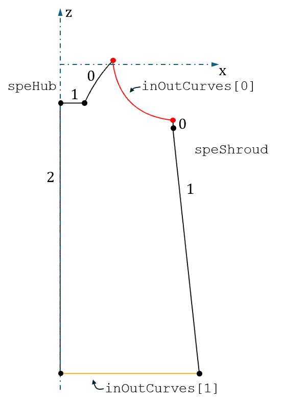
Fig. 63 Special hub (
speHub) and special shroud (speShroud) curves (black), together with the inlet (red) and outlet (orange) curves of the draft tube cone.The rotation vector and the origin point are stored in the variables
rotVector_andorigin_.The hub and shroud curves are passed to the method
calculateNormalAxis(). This method creates and returns the bounding boxspeBb_surrounding the curves. Furthermore, the center pointspeCenter_and the normal axisnormalAxis_of the bounding box are calculated and returned.The boundary curves of the layers are created using the method
createLayerBounds(). This method is called once for the hub layers and once for the shroud layers.As input, the wall curve lists
speHuborspeShroudand the inlet and outlet curvesinOutCurvesare passed to the method. The layer generation is defined by the layer thicknesslayer_thickness(\(t_{Layer}\)) and the list of support point positions along the spans of the wall curveslayer_supports. The label parameter is used to assign physical names to the generated geometries for visualization.The return values are the layer boundary curves
hubLayerCurves_andshroudLayerCurves_, the lists encoding whether a layer is located on a radius of zero (hubRadZero_andshroudRadZero_), and the connecting curves to the unstructured region (hubUnstructBounds_andshroudUnstructBounds_).Each wall curve that is not located on a radius of zero generates one layer face. Each layer face consists of four boundary curves. The first boundary curve corresponds to the respective hub or shroud wall curve.
The second and fourth boundary curves extend from the start and end points of the wall curves into the flow channel. For the first and last layer faces at the hub and shroud, these curves correspond either to the inlet or outlet curves or to a wall curve located on a radius of zero. At the intersection points of two wall curves, boundary curves extending into the flow channel are constructed such that they follow the mean normal direction of both curves.
The third boundary curve connects the second and fourth boundary curves inside the flow channel. It is constructed from the end points of the second and fourth boundary curves together with additional support points. These support points are calculated by translating points on the hub and shroud curves in the normal direction of the curves. The positions of these points along the hub and shroud curves are defined by the list
layer_supports.The lists
hubLayerCurves_andshroudLayerCurves_have the structureList[List[analyticGeometry]]. In this structure, each first-level list contains the four boundary curves of one layer face stored in the corresponding second-level list.The arrangement of the boundary curves in the second-level list is as follows:
hubLayerCurves_[i][0]: Wall curve of the i-th special hub curve.hubLayerCurves_[i][1]: Downstream curve extending from the wall into the flow channel or, for the last layer, along the outlet or a wall curve located on a radius of zero.hubLayerCurves_[i][2]: Curve extending inside the flow channel.hubLayerCurves_[i][3]: Upstream curve extending from the wall into the flow channel or, for the first layer, along the inlet interface.
This ordering results in the following parameter directions of the layer volumes after rotation:
u: Circumferential directionv: Streamwise directionw: Direction from the wall toward the flow domain
The following figure shows the boundary curves of the layers in black and the layer faces in blue. As an example of the numbering convention of the boundary curves, the indices of the second-level list in
hubLayerCurves_[0]are shown.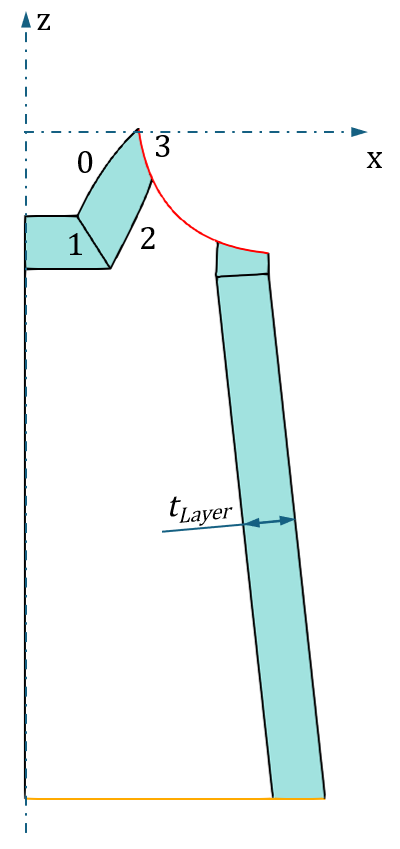
Fig. 64 Two-dimensional layer faces (blue) in the draft tube cone.
The lists containing Boolean values,
hubRadZero_andshroudRadZero_, contain a value ofTruefor layers located on a radius of zero. These layers form the last layer face on the corresponding wall. Their second boundary curve is formed by a section of the subsequent boundary curve located on the radius of zero. In the figures above, this applies to the curve inspeHub[1].The curves in
hubUnstructBounds_andshroudUnstructBounds_are copies of the third boundary curves of the layer faces. These curves are used to construct the multiple-bounded volume of the unstructured region.The inlet of the flow domain created in this class corresponds to the curve in
inOutCurves[0]. A section of this curve is used as the inlet boundary of the unstructured region.The curve is trimmed according to the layer thicknesses
layer_thicknessusing the dtOO classtrimmedCurve_uBounds. The resulting trimmed curve is stored ininterfaceUnstructBound_.To trim the outlet curve in
inOutCurves[1], it must first be determined whether a layer exists on the last hub curve. No layer is created on the last hub curve if the hub extends to a radius of zero. In this case,hubRadZero_[-1] == Trueapplies, and the first trim parameter is set to zero. Otherwise, the trim parameters on both the hub and shroud sides are determined usinglayer_thickness. The resulting trimmed curve is stored inoutletUnstructBound_.The object
unstructVH_of the dtOO classvectorHandlingAnalyticGeometryis instantiated to contain all boundary curves describing the contour of the unstructured region. The curves inhubUnstructBounds_andshroudUnstructBounds_are added to this object, whileinterfaceUnstructBound_is prepended andoutletUnstructBound_is appended.The faces of the hub and shroud layers are created by iterating over the lists
hubLayerCurves_andshroudLayerCurves_. During each iteration, the second-level boundary curves are inserted into a vector handler object namedlayer_vhc.The layer faces are then generated using the dtOO class
bSplineSurface_bSplineCurveFillConstructOCCwithlayer_vhcas input. The resulting layer faces are stored in the listshubLayers_andshroudLayers_.
- createLayerBounds(layerCurve, inOutCurves, thickness, supports, lab)[source]
Create boundary curves of the layer faces.
This method:
Iterates over the wall curves and checks if they are on a radius of zero.
Iterates over curves and combines them if they have a steady transition.
Iterates over curves and creates boundary curves of the layer faces.
Returns the lists with layer bounds and boundary curves for the unstructured region as well as a list telling which layers are on a radius of zero.
- Parameters:
layerCurve (List[analyticGeometry]) – List of wall curves.
inOutCurves (List[analyticGeometry]) – List with inlet and outlet curves.
thickness (float) – Layer thickness.
supports (List[float]) – List with positions of support points in percent along the parametrized span of the wall curve.
lab (string) – label
- Returns:
returnBounds (List[List[analyticGeometry]]) – Boundary curves of each layer on the wall curves.
on_rad_zero (List[Bool]) – Information for each layer, telling if the radius is on zero.
layerParallel (List[analyticGeometry]) – Inner boundary curves of the layers, used for the multiple bounded volume.
This method takes a list of wall curves
layerCurve(either hub or shroud) together with the inlet and outlet curvesinOutCurvesas input.Furthermore, the layer thickness
layer_thicknessand the list of support point positionssupportsare passed to the method.supportsdefines both the number of support points and their positions on each wall curve, for the creation of the third bounding curves, in the methodlayerCurve().The label
labis used to assign names to the generated geometries.The following figure shows the hub curves of the draft tube example stored in
layerCurve(black) together with their numbering in the list.layerCurve[2]and the inlet curveinOutCurves[0](red) are trimmed.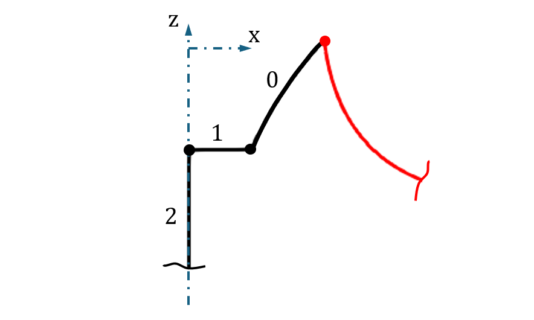
Fig. 65 Hub curves of the draft tube cone example in
layerCurve(black) and the inlet curve inboundsGlob[0](red).In a first loop checks are performed, which of the curves in
layerCurveget a layer region. This is only the case for curves which are not located on a radius of zero. The following figure shows the activity diagram of the first loop.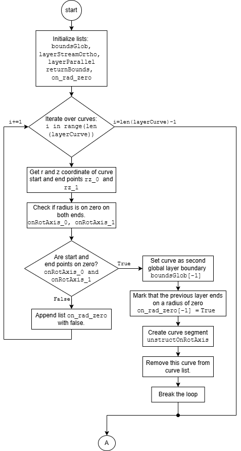
Fig. 66 Activity diagram of the first loop in
createLayerBounds().Initialize Lists
A copy of
inOutCurvesis created and assigned toboundsGlob. This list contains the global boundary curves that form part of the boundary curves of the first and last layer faces.The layer faces are constructed from four boundary curves. The following empty lists are prepared to store the layer boundary curves. The numbering first, second, third, and fourth corresponds to the definition given in the constructor documentation
__init__().layerStreamOrtho: List containing the second and fourth boundary curves, which extend from the wall into the flow domain.layerParallel: List containing the third boundary curves, which extend approximately parallel to the wall.returnBounds: List containing all boundary curves of the layer faces.on_rad_zero: List tracking which curves inlayerCurveare located on a radius of zero.
Iterate over Curves
In the first loop, a check is performed to determine which curves in
layerCurveare located on a radius of zero. This check is carried out using the methodrz_xyz(), which takes a point as input and performs a coordinate transformation from Cartesian coordinates into a cylindrical coordinate system defined by the originorigin_and the rotation axisrotAxis_.The method returns the radius and axial position of the point in cylindrical coordinates.
The check is performed on the radii of the start and end points of each curve using the method
inXYZToleranceof the classanalyticGeometry. This method returnsTrueif the radius lies within the tolerance of zero. Two cases are handeled.The curve is on a radius of zero:
onRotAxis_0 and onRotAxis_1
If the check returns
Truefor both points, the curve is considered to lie on a radius of zero. In this case, the outlet curve inboundsGlob[-1]is replaced by the current curve. This replacement is necessary because the curve forms the second boundary curve of the last layer face on the corresponding wall.The last entry of the list
on_rad_zerois then set toTrue.A curve extending from the layer thickness position to the end of the curve located on the rotation axis is created and assigned to the variable
unstructOnRotAxis. This curve is required as a boundary curve of the unstructured region.The curve located on the radius of zero is then removed from the list of layer curves, and the loop is terminated.
The curve is not on a radius of zero:
elseIf the curve is not located on a radius of zero, the list
on_rad_zerois extended with a value ofFalse.The following figure shows the hub curves together with their assigned Boolean values in
on_rad_zeroand the global layer boundaries stored inboundsGlob.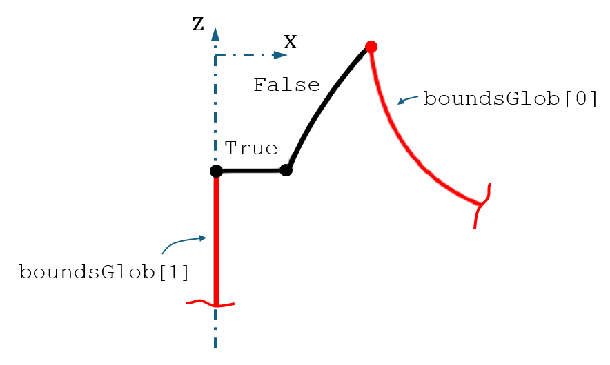
Fig. 67 Hub curves of the draft tube cone example together with their assigned Boolean values in the
on_rad_zerolist. The curves that are part of the global layer boundaries are shown in red.In a second loop, curves with a continuous transition at their connection points are combined within a specified tolerance range.
The following figure shows the activity diagram of this loop.
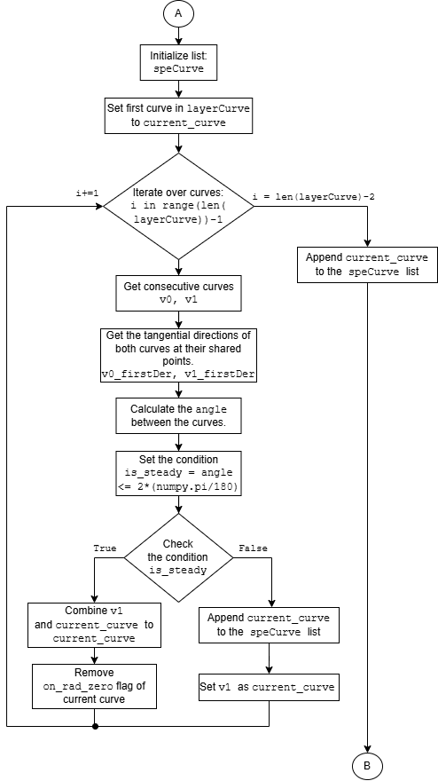
Fig. 68 Activity diagram of the second loop in
createLayerBounds().Itreate over Curves
In the loop, the tangent vectors, at the transition points, of two consecutive curves
v0andv1are calculated. This transition point corresponds to the end point ofv0and the start point ofv1.Using the angle between the tangent vectors
v0_firstDerandv1_firstDer, a continuity conditionis_steadyis formulated. This condition evaluates toTrueif the angular deviation between the two curves is less than or equal to two degrees.If the condition evaluates to
True, the curves are combined and stored in the variablecurrent_curve, which is then used in the next iteration. Furthermore, the corresponding flag in theon_rad_zerolist is removed.If the condition evaluates to
False, the current curve is appended to the listspeCurveand the consecutive curve is assigned tocurrent_curve.After the loop has finished, all curves for which layer faces are generated are stored in
speCurve.The boundary curves for the layers are generated in the third loop, which iterates over
speCurve. The following figure shows the activity diagram of this loop.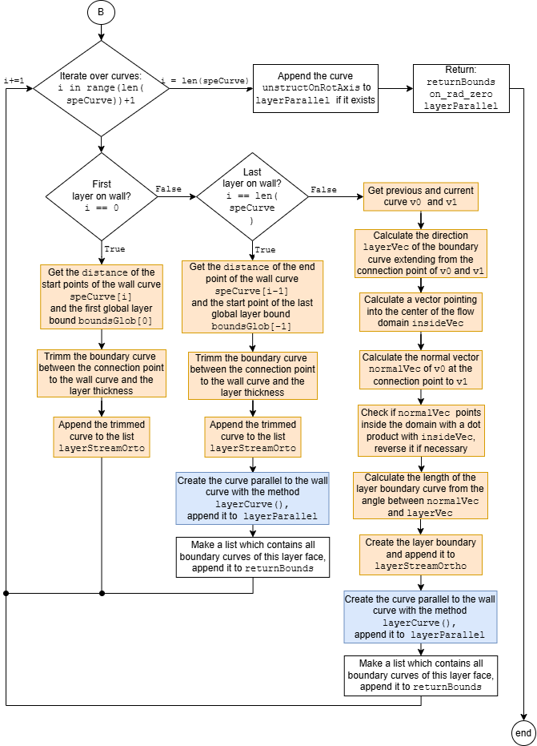
Fig. 69 Activity diagram of the third loop in
createLayerBounds(). Orange action blocks correspond to the creation of the second and fourth boundary curves, while blue action blocks correspond to the creation of the third boundary curves.Three different conditions may apply for each curve within the loop.
The first layer face along the wall
i == 0``
The fourth boundary curve of the first layer face is formed by the inlet curve stored in
boundsGlob[0]. This boundary curve is created by trimming the inlet curve from its shared point with the layer curvespeCurve[i]to the layer thickness specified bylayer_thickness.The connection point must correspond to the start of the parameter span (0 %) of the global boundary curve. Depending on whether hub or shroud wall layers are created, this is not always the case.
To ensure that both curves share the same start point, the distance between their start points is computed and checked against the geometric tolerance. The distance is calculated using the method
distanceof the dtOO classdtLinearAlgebra. The tolerance check is performed usinganalyticGeometry.inXYZTolerance.If the distance exceeds the tolerance, the global boundary curve is reversed.
The resulting trimmed curve is appended to the list
layerStreamOrtho.The last layer face along the wall
i == len(speCurve)
The second boundary curve of the last layer face is formed by the second global boundary
boundsGlob[-1]. This boundary can either be on the the outlet curve of the layered region or on a curve located on the radius of zero.The layer boundary is created similarly to case 1. In this case, the distance between the end point of the wall curve
speCurve[i-1]and the start point of the global boundary curve is used to orient the global boundary curve correctly.The third layer boundary curve, extending approximately parallel to the wall, is created using the method
layerCurve(). The resulting curve is appended to the listlayerParallel.The list
newLayeris created. This list contains the four boundary curves of the last layer face.Regular layer face
elseIn this case, the wall curve in each iteration is
speCurve[i-1]. For each wall curve, the second and third layer boundary curves are created. The second boundary curve is generated directly within the loop, while the third boundary curve is created using the methodlayerCurve(). The fourth boundary curve is taken from the second boundary curve generated in the previous iteration.Get Cuves v0 and v1
The second layer boundary curve is constructed so it extends in the mean normal direction \(\mathbf{v_{mean}}\) between the curves
speCurve[i-1]andspeCurve[i]at their shared point \(P_0\). The curves are assigned to the variablesv0andv1.Caluclate the direction of the second boundary curve
The mean normal direction is calculated as follows:
\[\mathbf{v_{mean}} = \frac{\mathbf{n_0} + \mathbf{n_1}}{\|\mathbf{n_0} + \mathbf{n_1}\|}\]The normal directions of the curves (\(\mathbf{n_0}\) and \(\mathbf{n_1}\)) at the shared point are calculated as the cross products of the normal axis of the channel cross-section
normalAxis_(\(\mathbf{n_{global}}\)) and the tangential directions of the curves at the shared point (\(\mathbf{t_0}\) and \(\mathbf{t_1}\)).\[\mathbf{n} = \frac{\mathbf{t} \times \mathbf{n_{global}}}{\|\mathbf{t} \times \mathbf{n_{global}}\|}\]The resulting vector \(\mathbf{v_{mean}}\) is stored in the variable
layerVec.The following figure illustrates the generation of the second layer boundary curves.
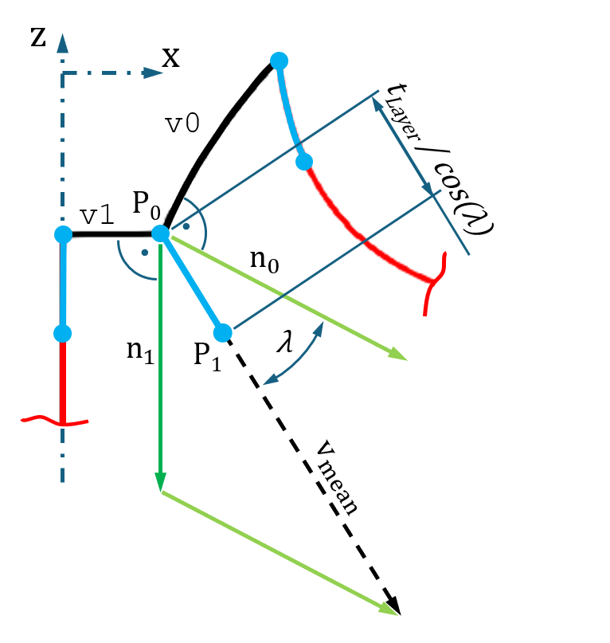
Fig. 70 Creation of the second and fourth layer boundary curves (blue) extending from the wall curves into the flow domain.
Calculate a Vector Pointing Into the Center
The vector
insideVecis created by subtracting the global center pointspeCenter_from the shared point of the two wall curves. This results in a vector pointing from the shared point toward the interior of the flow domain.Calculate the Normal Vector, Check the Direction and Calculate the Length
The normal vector
normalVecof curvev0at the shared point is defined with the length specified withthickness(\(t_{Layer}\)). By calculating the dot product of the vectorsnormalVecandinsideVec, it can be determined whethernormalVecpoints toward the interior or exterior of the flow domain. If the dot product is negative, the direction ofnormalVecis reversed by multiplying it with-1.The length of the layer boundary curve is calculated from the length of
normalVecand the angle betweennormalVecandlayerVec(see Fig. 70).Create the Layer Boundary
The layer boundary curve is constructed between the points \(P_0\) and \(P_1\). The point \(P_1\) is calculated from the point \(P_0\) by adding the direction vector
layerVec(\(\mathbf{v_{mean}}\)) multiplied by the required layer thickness.\[P_1 = P_0 + \mathbf{v_{mean}} * t_{Layer} / cos(\lambda)\]The resulting curve is stored in the list
layerStreamOrtho.Create third Boundary Curve
The third boundary curve is generated using the method
layerCurve(). The method takes the listlayerStreamOrtho, the current wall curvev0, and the current iteration indexias input arguments.The generation of the curve is controlled by the layer thickness
thicknessand the support point positions defined insupports. The returned curveextis stored in the listlayerParallel.The creation of the third layer boundary curve is illustrated in the following figure.
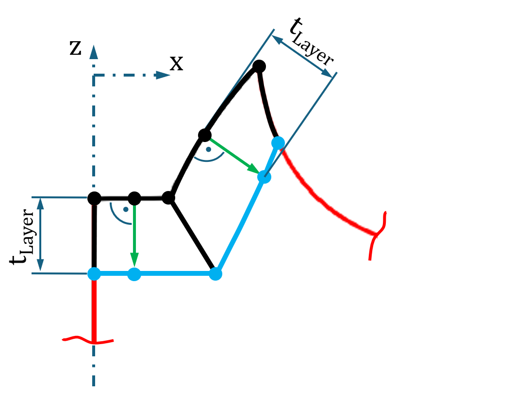
Fig. 71 Creation of the third layer boundary curve (blue) extending into the flow domain.
Append List of Boundary Curves
The boundary curves of the current layer face are stored in the list
newLayer. In this list, the boundary curves are ordered according to the numbering convention used throughout this documentation, with the wall curvev0forming the first entry.The second entry contains the curve in
layerStreamOrthogenerated in the current iteration. The fourth entry contains the curve inlayerStreamOrthogenerated in the previous iteration. The third entry contains the curve stored inlayerParallel.The following figure shows all boundary curves surrounding the layer faces together with their orientations. For the first layer face, the numbering of the boundary curves is shown explicitly.
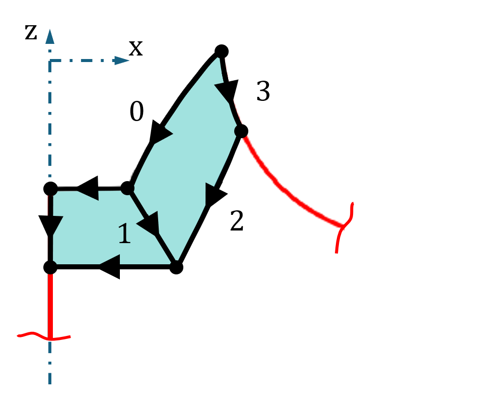
Fig. 72 All layer boundary curves surrounding the layer face (blue).
The list
newLayeris appended to the listreturnBounds.
After the loop has concluded, the curve
unstructOnRotAxisis appended to the listlayerParallelif it exists.The method returns the lists
returnBounds,on_rad_zero, andlayerParallel.
- layerCurve(layerStreamOrtho, i, curve, thickness, supports, lab)[source]
Create third boundary curve extending paralell to the wall.
This method:
Creates third layer bounding curve from the end points of the second and third bounding curves and support points.
- Parameters:
layerStreamOrtho (List[analyticGeometry]) – Boundary curves of the layer faces orthogonal to the wall curve.
i (int) – Iterator, iD of the wall curve.
curve (analyticGeometry) – Wall curve
thickness (float) – Layer thickness
supports (List[float]) – List with positions of support points in percent along wall curve
lab (string) – label
- Returns:
ext – Created layer curve inside the layer region
- Return type:
analyticGeometry
The inputs to this method are the list of second and fourth layer boundary curves
layerStreamOrtho, the wall curvecurvefor which the third boundary curve is created, and the iteration indexiof this curve within the loop increateLayerBounds().The generation of the boundary curve is controlled by the layer thickness
thicknessand the number and positions of support points specified insupports.The following figure illustrates the creation of the third layer boundary curve.
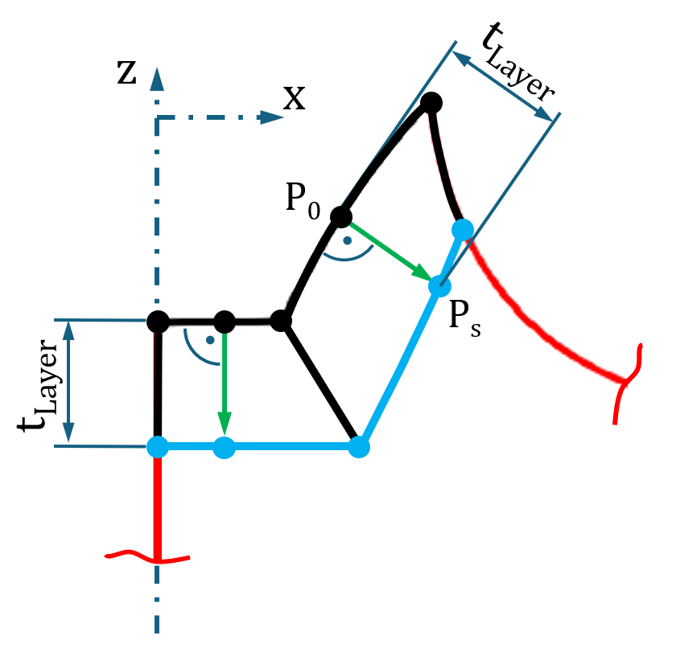
Fig. 73 Creation of the third layer boundary curve (blue) using the method
layerCurve().Get second and fourth Boundary Curves
The iteration index
iis used to retrieve the second and fourth boundary curves of the current layer fromlayerStreamOrtho. These curves are assigned to the variablesbound0andbound1.Calculate Offset Direction
Using the method
calculateNormalAxis(), the center point of the bounding box surrounding the two boundary curves and the wall curve is calculated and stored inlayerCenter.This point is used to define the vector
insideVec, which points from the point located at 50 % of the parameter range ofcurvetoward the interior of the layer face.The vector
normalVecis created to point in the normal direction of the wall curve at 50 % of its parameter span. It is calculated as the cross product of the tangent vector of the curve at this point and the global normal axisnormalAxis_.Using the dot product of
normalVecandinsideVec, the offset direction from the wall curve is determined through the variabledirection, which is assigned either1or-1.Create Boundary Curve
A container object of the dtOO class
vectorDtPoint3is created. The end point of the fourth layer boundary curvebound0is appended to this container.By iterating over
supports, the support points \(P_s\) are generated. Each entry insupportscontains a floating-point value defining a relative parameter position along the wall curve.For each support value, a base point \(P_0\) is calculated on the wall curve.
The support point is then created by offsetting \(P_0\) in the normal direction of the wall curve at \(P_0\).
The normal direction is defined as the cross product between the tangent direction \(\mathbf{t}\) at \(P_0\) and the global normal axis
normalAxis_(\(\mathbf{n_{global}}\)).The offset length is prescribed by
layer_thickness(\(t_{Layer}\)). The value ofdirection(\(k\)) ensures that the support points are generated inside the flow domain.The following equation describes the calculation of a support point:
\[P_s = P_0 + \frac{\mathbf{t} \times \mathbf{n_{global}}}{\|\mathbf{t} \times \mathbf{n_{global}}\|} * t_{Layer} * k\]The generated support points are appended to the point container.
After all support points have been generated, the end point of the second layer boundary curve
bound1is appended to the container.The third layer boundary curve is then created as a
bSplineCurve_pointConstructOCCobject using the points stored in the container.The method returns the generated curve.
- rz_xyz(pp: dtOOPythonSWIG.dtPoint3) dtOOPythonSWIG.dtPoint2[source]
Transform a point in cartesian coordinates into cylindric coordinates.
This method:
Transforms a point in the xyz-coordinates into cylindric coordinates.
Returns radius and z-position of the point.
- Parameters:
pp (dtPoint3) – Point in xyz-coordinates.
- Returns:
dtPoint2 – dtPoint2 object containing the radius and z-position of pp
The point
ppin carthesian coordinates is reparametrized in cylindirccoordinates based on the origin point
origin_and the rotational vectorrotVector_.Returns the radius
rrand the z-coordinatezzin a dtPoint2object.
- static calculateNormalAxis(curves)[source]
Calculate the bounding box and normal axis of curves in one plane.
This method:
Creates a bounding box around the curves.
Calculates the normal axis on the bounding box.
Calculates the center of the bounding box.
Returns normal axis, center and bounding box.
- Parameters:
curves (List[analyticGeometry]) – List of curves.
- Returns:
normalAxis (dtVector3) – Normal axis of the bounding box.
bbCenter (dtPoint3) – Center point of the bounding box.
bb (pairDtPoint3) – Bounding box points.
- build() None[source]
Plot the instantiated geometries in paraview if debug is enabeled.
- Parameters:
None
- Return type:
None
This method allows the instantiated geometries to be plotted in ParaView, by adding them to the analytic geometry container. If the code is run in paraview, the geometries can be found with the FindAndShow method.
- getLayerList(nSlices: int) List[List[List[dtOOPythonSWIG.analyticGeometry] | List[bool]]][source]
Create the layer volumes and return the layer data.
This method:
Rotates the hub and shroud layer faces to create volumes.
Returns the generated layer data in structured lists.
- Parameters:
nSlices (int) – Number of rotationally periodic slices.
- Returns:
layerList – List containing the generated layer volumes and information about whether a layer is located on a radius of zero.
The entries correspond to the following values:
layerList[0]: Hub layerslayerList[1]: Shroud layerslayerList[i][0]: List of layer volumeslayerList[i][1]: List of Boolean values indicating whether the corresponding layer is located on a radius of zero
- Return type:
List[List[List[analyticGeometry] | List[bool]]]
The layer faces stored in
hubLayers_andshroudLayers_are rotated aroundrotVector_. The rotation angle is defined by the number of slices as:\[{360^\circ}/{n_{Slices}}\]The generated layer volumes are stored in the lists
hubLayer3dandshroudLayer3d.The following figure shows the resulting volumes of the draft tube cone.
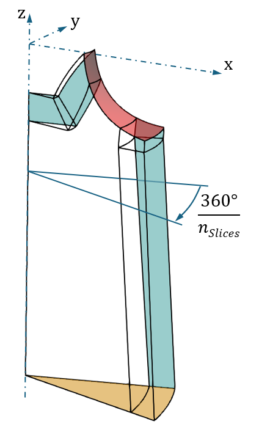
Fig. 74 Volumes of the draft tube cone. Layer faces (blue), inlet (red), and outlet (orange).
The hub and shroud layer volumes together with the lists
hubRadZero_andshroudRadZero_are returned in the following format:layerList = List[ List[ List[analyticGeometry], List[bool] ] ]
The entries correspond to the following values:
layerList[0]: Hub layerslayerList[1]: Shroud layerslayerList[i][0]: List of layer volumeslayerList[i][1]: List of Boolean values indicating whether the corresponding layer is located on a radius of zero
- getUnstructuredRegion(nSlices: int) Tuple[dtOOPythonSWIG.analyticGeometry, List[dtOOPythonSWIG.analyticGeometry]][source]
Create and return the unstructured region together with its bounding surfaces.
This method:
Creates the boundary surfaces of the unstructured region that connect to the layer volumes.
Creates the periodic boundary surfaces of the unstructured region as multiple-bounded surfaces.
Creates the unstructured region as a multiple-bounded volume.
Returns the multiple-bounded volume together with its boundary surfaces.
- Parameters:
nSlices (int) – Number of rotationally periodic slices.
- Returns:
multBoundedVol (multipleBoundedVolume) – Unstructured region located between the hub and shroud layers.
boundSurf (vectorHandlingAnalyticGeometry) – Vector handler containing the boundary surfaces of the multiple-bounded volume.
The unstructured region is created as an object of the dtOO class
multipleBoundedVolume. The multiple-bounded volume is defined by its boundary surfaces.Create Boundary Surfaces through the Rotation of Curves
The inlet and outlet surfaces, together with the surfaces connecting the multiple-bounded volume to the layer volumes, are created from the curves stored in the vector handler
unstructVH_.The surfaces are generated using the dtOO class
rectangularTrimmedSurface_curveRotateConstructOCC. This class creates surfaces by rotating curves around the rotation vectorrotVector_over the anglerotAngledefined as:\[{360^\circ}/{n_{Slices}}\]Conditional statements are used to assign labels to the generated surfaces. Due to the ordering of curves in
unstructVH_, the first and last curves define the inlet and outlet surfaces of the unstructured region. These surfaces receive the labelsinterface_unstructandoutlet_unstruct.The remaining surfaces connect the unstructured region to the layer regions and are labeled as
parafollowed by their position in the vector handler.Using the method
degeneratedof the dtOO classanalyticSurface, a check is performed to determine whether any of the rotated surfaces are degenerated. Degenerated surfaces occur when the corresponding curve lies on a radius of zero.Only non-degenerated surfaces are appended to the
vectorHandlingAnalyticGeometryobjectboundSurf.The following figure shows the boundary surfaces created from the curves stored in
unstructVH_.
Fig. 75 Boundary surfaces of the multiple-bounded volume with inlet (red), outlet (orange), and layer connection surfaces (blue). The periodic multiple-bounded surfaces are not shown.
Create Periodic Faces as Multiple Boundes Surfaces
The periodic surfaces of the unstructured region slice are created as multiple-bounded surfaces. These surfaces are generated using the dtOO class
multipleBoundedSurface, which takes a set of boundary curves together with a surrounding bounding box as input.The bounding box is created from the minimum and maximum vertices stored in
speBb_. Based on these vertices, a bounding boxm2dis generated for the first multiple-bounded surface, extending 0.1 units beyondspeBb_in all directions.The first periodic surface
mbs1is created fromm2dand the boundary curves stored inunstructVH_using the classmultipleBoundedSurface. The surface is assigned the labelperiodicUnstruct_0and appended toboundSurf.To create the second periodic surface, a rotational transformation is applied to both the bounding box and the boundary curves.
For this purpose, a dtTransformer object is initialized. The transformation configuration is defined in the
jsonPrimitiveobjectcfg, where the rotation vector, origin, and rotation angle are set torotVector_,origin_, androtAngle, respectively.The resulting rotation object is stored in
rot.By applying
rottom2d, the rotated bounding boxm2d_rotis created. By iterating overunstructVH_and applying the same rotational transformation, the rotated boundary curves are generated and stored inunstructVH_rot.The second multiple-bounded surface is created analogously to the first one using
m2d_rotandunstructVH_rot. This surface is assigned the labelperiodicUnstruct_1and appended toboundSurf.Create Unstructured Region as Multiple Bounded Volume
The unstructured region itself is finally created using the class
multipleBoundedVolume. Its bounding volume is defined as aninfinityMap3dTo3dobject, while the vector handlerboundSurfis provided as the collection of boundary surfaces.Returns
The method returns both the multiple-bounded volume and the vector handler
boundSurfcontaining all generated boundary surfaces.
{kind=link}
{kind=link}
{kind=link}
{kind=link}
{kind=link}
{kind=link}
{kind=link}
{kind=link}
{kind=link}
{kind=link}
{kind=link}
{kind=link}
- class dtOOPythonApp.builder.map3dTo3dGmsh_gridFromLayers.map3dTo3dGmsh_gridFromLayers(mv: dtOOPythonSWIG.analyticGeometry, bs: List[dtOOPythonSWIG.analyticGeometry], label: str, layers: List[List[List[dtOOPythonSWIG.analyticGeometry] | List[bool]]], nElementsLayer: int, firstElement: float, elementSize_sw: float, elementSize_circ: float, charLengthMin: float = 0.05, charLengthMax: float = 0.1)[source]
Create mesh topology as map3dTo3dGmsh.
This class:
Creates a map3dTo3dGmsh topology object.
Adds the unstructured region to the topology.
Adds layer volumes to the topology.
Manages layer faces in the topology.
Applies mesh settings to the edges.
Applies gradings and mesh rules.
Renames faces.
Applies mesh settings to topology.
- label_
Label.
- Type:
str
- layerList_
Layer lists for hub and shroud with 3d regions and bool list.
- Type:
List[List[List[analyticGeometry] | List[bool]]]
- nLayers_
Number of elements normal to the walls in the layer volumes.
- Type:
int
- firstElement_
Size of first element on the walls.
- Type:
float
- elementSizeSw_
Element size in streamwise direction.
- Type:
float
- elementSizeCirc_
Element size in circumferential direction.
- Type:
float
- unstructured_
Multi bounded volume of the unstructured region.
- Type:
analyticGeometry
- unstructuredSurfaces_
Bounding faces of the mult bounded volume.
- Type:
List[analyticGeometry]
- map3dTo3dGmshJson_
JSON structure for map3dTo3dGmsh.
- Type:
jsonPrimitive
Examples
None
The class is used to create the mesh topology of a flow channel consisting of five- or six-sided layer volumes on the hub and shroud walls and a multiple bounded volume inside the flow domain, connecting to the layer volumes.
The layer volumes are meshed transfinite and the multiple bounded volume is meshed unstructured.
In the constructor, the input parameters are instantiated. The multiple bounded volume is instantiated as
unstructured_. The list with its bounding surfaces is instantiated asunstructuredSurfaces_.The layer list is instantiated as
layerList. Its structure is as follows:layerList = List[ List[ List[analyticGeometry], List[bool] ] ]
The entries correspond to the following values:
layerList[0]: Hub layerslayerList[1]: Shroud layerslayerList[i][0]: List of layer volumes.layerList[i][1]: List of Boolean values indicating whether the corresponding layer is located on a radius of zero.
The layers are meshed with a grading extending from the wall faces into the flow domain. The number of elements in the grading is defined as
nLayers_. The size of the first element on the wall is specified withfirstElement_.The number of elements in streamwise and circumferential direction is set with
elementSizeSw_andelementSizeCirc_. These parameters correspond to maximal element sizes on the hub and shroud walls.The size of the elements in the unstructured region is set with the minimal and maximal characteristic lengths
charLengthMinandcharLengthMax.The topology settings are defined with a
jsonPrimitiveobject instantiated asmap3dTo3dGmshJson_. Here, the characteristic lengths of the unstructured mesh elements are applied.With the
build()method, the mesh settings are applied to the topology. The methodsdetectFirstAndSecond()andgetCommonEdgesByPhysicalFaces()are used to organize the faces and edges of the layer volumes.The mesh topology is appended to the bounded volume container at the end of the
build()method.- build() None[source]
Build part.
This method is the main method of the class.
Creates a
map3dTo3dGmshtopology object.Adds the unstructured region to the topology.
Adds layer volumes to the topology.
Manages layer faces in the topology.
Applies mesh settings to the edges.
Applies gradings and mesh rules.
Renames faces.
Applies mesh settings to the topology.
- Parameters:
None
- Return type:
None
The topology object
m3Gmshis created with the settings inmap3dTo3dGmsh_.The labeled vector handling objects
aGandaFare created to handle analytic geometries and functions in this method.The bounding faces of the unstructured region in
unstructuredSurfaces_are labeled in the getter methodgetUnstructuredRegionof the classanalyticGeometry_layerRegion. The labels are as follows:"periodicUnstruct_0": First periodic surface"periodicUnstruct_1": Second periodic surface"interface_unstruct": Inlet of the flow domain’s unstructured region"outlet_unstruct": Outlet of the flow domain’s unstructured region"para" + str(i): Connecting faces to the layer volumes
The bounding faces that are not labeled with the string
paraare pushed intoaGby iterating over the list.Fig. 76 shows the face
outlet_unstructin orange andinterface_unstructin red. The faces labeled withparaare equal to the wall-parallel faces of the layer volumes (purple). The periodic faces of the unstructured region are not shown.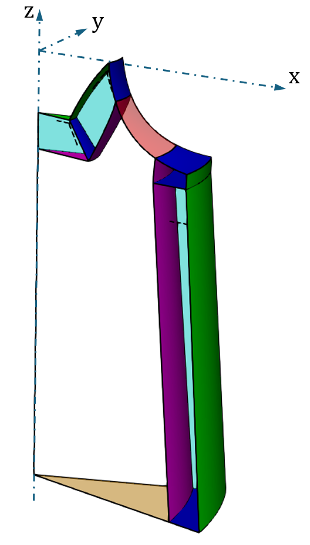
Fig. 76 Faces in the layered flow domain.
The multiple bounded volume of the unstructured region is added to the topology and allocated in
unstrct3d.In a nested loop over
layerList_, the layer volumes of the hub and shroud are added to the topology. The faces of the layers are added toaG. The activities inside the loop are illustrated in the following figure.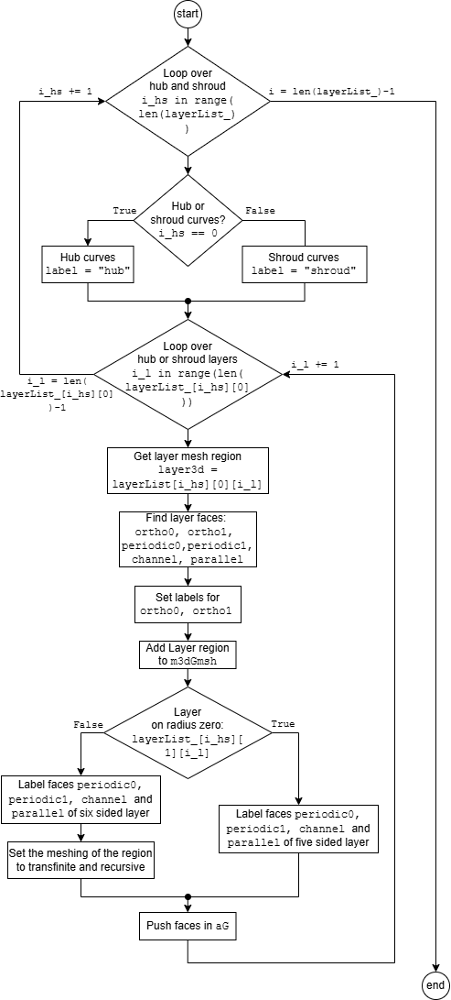
Fig. 77 Activities for adding the layer volumes to the topology.
Loop over Hub and Shroud
i_hs in range(len(layerList_))
The first-level loop iterates over the hub and shroud data in
layerList_. According to the iteratori_hs, thelabelvariable is set to the stringshuborshroud.Loop over Layers
i_l in range(len(layerList[i_hs][0]))
The second-level loop iterates over the hub or shroud layers in
layerList_[i_hs]. The iterator isi_l.With the method
detectFirstAndSecond(), the faces of each layer are identified. The method takes the layer volume as amap3dTo3dobject and the parameter direction as an integer input. By calling the function once for each parameter direction, all faces of the layer volume are returned. The returned faces are allocated to the following parameters:Here,
ortho0is the upstream face of each layer volume andortho1is the downstream face. The facesortho0andortho1are labeled as follows:ortho0:"ortho_"+label+str(i_l)ortho1:"ortho_"+label+str(i_l)+1
The layer volumes are added to the topology
m3dGmshand receive the region IDrID.The labeling of the other faces depends on whether the layer volume is five- or six-sided. A layer is five-sided if it is located on the radius of zero. This is checked with the list in
layerList_[i_hs][1]. This differentiation is necessary, because different meshing strategies have to be applied.The layer is six sided:
The layer is six sided when
layerList_[i_hs][1][i_l] == Falseapplies. In this case, the naming of the faces is as follows:periodic1:"periodic0_"+label+str(i_l)periodic0:"periodic1_"+label+str(i_l)channel:"channel_"+label+str(i_l)parallel:"parallel_"+label+str(i_l)
The mesh settings are set to transfinite and recursive.
The layer is five sided:
If the layer is five sided, the string
5sis added to the face names:periodic1:"periodic05s_"+label+str(i_l)periodic0:"periodic15s_"+label+str(i_l)channel:"channel5s_"+label+str(i_l)parallel:"parallel5s_"+label+str(i_l)
In this case, the layer cannot be meshed completely transfinite recursive. Its mesh settings have to be applied directly to the edges.
The labeled faces are pushed into
aG.ortho0is pushed intoaGin every iteration.ortho1is only pushed in the last iterationi_l == len(layerList_[i_hs][0])-1if the last layer is not on a radius of zerolayerList_[i_hs][1][i_l] == False.Apply Mesh Sizing
With an observer of the class
bVOAnalyticGeometryToFace, the labeled faces inaGare added to the topologym3dGmsh.The mesh settings are applied to the edges of the layer volumes. The following figure shows the edges on which mesh settings are applied.

Fig. 78 Edges in the flow domain on which mesh settings are applied.
channelToParallelLines(green),swLines(pink), andcircLines(blue). On grey edges no mesh settings are applied.Apply Gradings on the Walls
The grading on the hub and shroud layers is set on the edges extending from the
channeltoparallelfaces. The edges are stored inchannelToParallelLines. By iterating over these edges, the grading is applied with the methodsetGrading. The first input of this method is the direction of the grading, and the second one is an identifier for the grading function. The number of elements is set tonLayers_.While iterating over the edges, the sum of their edge lengths is calculated. Using the number of edges in
channelToParallelLines, the mean edge length is calculated. By dividing this value bynLayers_, the mesh sizemeshSizeAtPointsat the connection face between the layer and the unstructured volume is estimated.To set the number of elements on the edges in the streamwise (Fig. 78 (pink)) and circumferential directions (Fig. 78 (blue)), an iteration over the layer list is performed. The following figure illustrates the processes in an activity diagram.
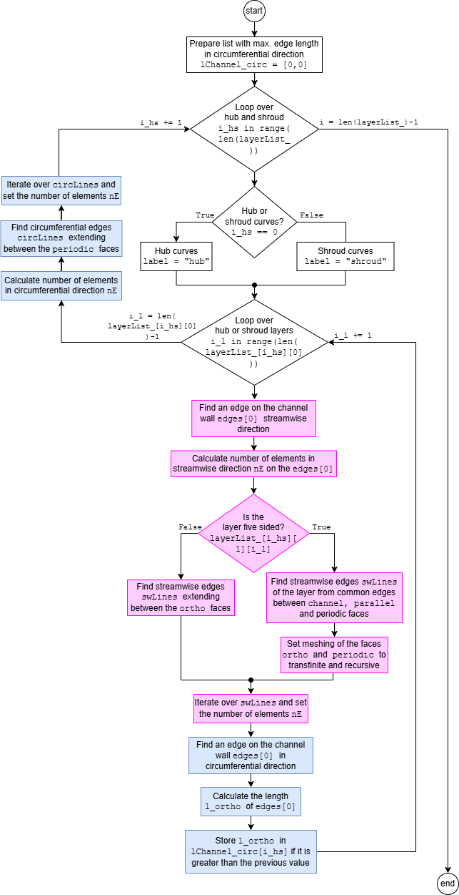
Fig. 79 Activities for the mesh settings in the streamwise and circumferential directions. Pink action blocks correspond to operations on the streamwise edges, blue action blocks correspond to operations on circumferential edges.
Prepare List
The list
lChannel_circ = [0,0]is prepared. The two values in this list are used in the loop to store the maximum lengths of the circumferential edges on the hub and shroud walls.Loop over Hub And Shroud
i_hs in range(len(layerList_))
Similarly to the loop in Fig. 77, a nested loop over the two levels of
layerList_is performed. The first-level loop iterates over the hub and shroud layers. The string value oflabelis set accordingly.Loop over Layers
i_l in range(len(layerList_[i_hs][0]))The second-level loop iterates over the specific layers in the hub or shroud set.
Edges in Streamwise Direction
The length
lChannel_swof the wall edge of the current layer in the streamwise direction is calculated. The edge is returned as the common edge between thechanneland theperiodic0faces with the methodgetCommonEdgesByPhysicalFaces().With this length, the number of elements
nEis calculated by dividing the length through the element sizeelementSizeSW_. By roundingnEto the next-highest integer value, it is ensured thatelementSizeSW_is the maximal element size on the wall face in the streamwise direction.The handling of six- and five-sided layers differs here. This is checked with the value in
layerList_[i_hs][1][i_l].Layer is six sided
layerList_[i_hs][1][i_l] == FalseThe streamwise edges (Fig. 78 (pink)) extending between the
orthofaces of the layer are returned by the methodgetDtGmshEdgeTagListByFromToPhysicalof the Gmsh model.Layer is five sided
layerList_[i_hs][1][i_l] == TrueThe four edges are returned by the method
getCommonEdgesByPhysicalFaces(). Here, the edges of thechannelor theparallelfaces are compared with theperiodic0andperiodic1faces. The common edges of these faces are stored in the listswLines.The meshing of the four-sided faces
ortho,periodic0, andperiodic1of the layer is set to transfinite with a recombine.Apply Mesh Settings on Edges in Streamwise Direction
By iterating over
swLines, the number of elementsnEis set on the edges.Edges in Cricumferential Direction
The length
l_orthoof the upstream circumferential edge of the layer volume is returned. If the length is greater than the value stored inlChannel_circ, the value replaces the current entry in the list.If the iteration is at the last layer and the layer is not located on a radius of zero, the length
l_orthois calculated and compared for the downstream circumferential edge.Apply Mesh Settings on Edies in Circumferential Direction
After the second-level loop for a layer region has concluded, the number of elements according to the maximal edge length is set on the circumferential edges.
The number of elements
nEis calculated with the maximal edge lengthlChannel_circ[i_hs]and the element sizeelementSizeCirc_. By rounding the value ofnEto the next-higher integer, it is ensured that the specified element size represents a maximum size along the circumferential direction of the layer wall.The circumferential edges
circLines(Fig. 78 (blue)) extend between theperiodicfaces. By iterating overcircLines, the number of elements is set.Create Observers
The observer
bVOSetPrescribedMeshSizeAtPointsis applied. This observer is used to set the mesh size of the unstructured region at the connection points with the layer volumes to the value calculated inmeshSizeAtPoints.The object of the grading function
theRefis created with the dtOO class scaTanhGradingOneDCompound. It is labeledaF_gradingand pushed intoaF.An observer of the class
bVOSetPrescribedElementSizeis created. This observer combines the analytic grading function specified intheRefwith the_typeidentifier and the size of the first element in the gradingfirstElement_.The mesh rules are applied with the observer
bVOMeshRule. The rulesdtMeshFreeGradingGEdge,dtMeshGFace, anddtMeshGRegionare used for all edges, surfaces, and volumes.The observer of the class
bVOFaceToPatchRuleis used to rename the faces. This is done so that the naming of the face regions is consistent with the setup rules of the simulation.The faces are renamed with the label
label_and a string for the region. The following names are assigned to the faces:label_ + '_hub': hub wallslabel_ + '_shroud': shroud wallslabel_ + '_inlet': inlet surfaceslabel_ + '_outlet': outlet surfaceslabel_ + '_periodic0': first periodic segment faceslabel_ + '_periodic1': second periodic segment faces
With an if-condition, it is checked whether the last hub wall extends to a radius of zero. If this is the case (see Fig. 76), the hub layer regions are not part of the outlet.
If the last hub wall is not on zero, the last
orthoface of the hub regions is added as an outlet face.With the observer of the class
bVOWriteMSH, the settings for the created.mshfile are defined.The observer
bVOOrientCellVolumesis applied with the setting"_positive" : true.Returns
The method appendBoundedVolume is used to append the topology object
m3dGmshto the container objects in the main class.A mesh resulting from this topology is shown in the following figure.

Fig. 80 Mesh of a draft tube cone resulting from the described topology.
- detectFirstAndSecond(channel: dtOOPythonSWIG.map3dTo3d, direction: int) Tuple[dtOOPythonSWIG.map2dTo3d, dtOOPythonSWIG.map2dTo3d][source]
Detect first and second faces in a volume’s parameter direction.
This method returns the faces of a map3dTo3d object at 0 and 100 percent of the u-, v-, or w-paramter.
- Parameters:
channel (map3dTo3d) – Volume.
direction (int) –
Direction in uvw
1 -> U
2 -> V
3 -> W
- Returns:
first (map2dTo3d) – first segment in direction
second (map2dTo3d) – second segment in direction
- getCommonEdgesByPhysicalFaces(m3dGmsh, face0: str, face1: str)[source]
Return the common edges between two faces.
This method:
Iterates over the edges on both faces.
Ginds faces with the same tag.
Returns them in a list.
- Parameters:
channel (map3dTo3d) – Volume.
face0 (str) – Pyhsical name of first face
face1 (str) – Pyhsical name of second face
- Returns:
commonEdges – List of edges on both faces
- Return type:
List[dtGmshEdge]
{kind=link}
{kind=link}
{kind=link}